Mục tiêu học tập
Học xong Chương 8, bạn cần làm được những việc dưới đây. Nhãn cho biết mục nào trình bày nội dung đó.
- 8.1Giải thích thuyết Vụ Nổ Lớn và nguồn gốc các nguyên tố.
- 8.2Giải thích nguồn gốc Hệ Mặt Trời và hệ quả của nó đối với Trái Đất.
- 8.3Mô tả buổi đầu đầy biến động của Trái Đất trong Liên đại Hỏa thành và Liên đại Thái cổ.
- 8.5Nhận biết sự chuyển sang khí quyển hiện đại, kiến tạo mảng và tiến hóa diễn ra trong Liên đại Nguyên sinh.
- 8.6Mô tả sự tiến hóa và tuyệt chủng trong Đại Cổ sinh của động vật không xương sống có phần cứng, cá, lưỡng cư, bò sát, động vật bốn chân và thực vật trên cạn; cùng hoạt động kiến tạo và trầm tích gắn với siêu lục địa Pangea.
- 8.7Mô tả sự tiến hóa và tuyệt chủng trong Đại Trung sinh của chim, khủng long và thú; cùng hoạt động kiến tạo và trầm tích gắn với sự tan rã của Pangea.
- 8.8Mô tả sự tiến hóa của thú và chim, cổ khí hậu, và hoạt động kiến tạo đã định hình thế giới hiện đại trong Đại Tân sinh.
Cách dùng tài liệu này
Từ có gạch chân là thuật ngữ. Bấm vào từ đó, hoặc mở Thuật ngữ ở góc dưới bên phải, để đọc và tìm mọi định nghĩa trong chương. Lịch sử Trái Đất dựa trên bốn lĩnh vực: cổ địa lý (cảnh quan xưa), cổ sinh vật học (sinh vật xưa), cổ sinh thái học (hệ sinh thái xưa) và cổ khí hậu học (môi trường xưa). Chương sách bắt đầu từ nguồn gốc vũ trụ rồi đi qua 4,6 tỷ năm lịch sử Trái Đất theo từng liên đại và từng đại. Trong tài liệu này, Ga là tỷ năm trước và Ma là triệu năm trước.
- Khoáng vật cổ nhất đã định tuổi, 4,4 Ga (8.3)
- Đợt bắn phá lớn muộn, 4,1–3,8 Ga (8.4.1)
- Hóa thạch bảo tồn tốt đầu tiên (stromatolit), 3,5 Ga (8.4.3)
- Sự kiện Oxy hóa Lớn, khoảng 2,5–2 Ga (8.5)
- Sinh vật nhân thực đầu tiên, 2,1–1,6 Ga (8.5.2)
- Sinh sản hữu tính, khoảng 1,2 Ga (8.5.2)
- Rodinia hình thành khoảng 1 Ga, tan rã 750–600 Ma (8.5.1)
- Khu hệ Ediacara, 635,5–541 Ma (8.5.2)
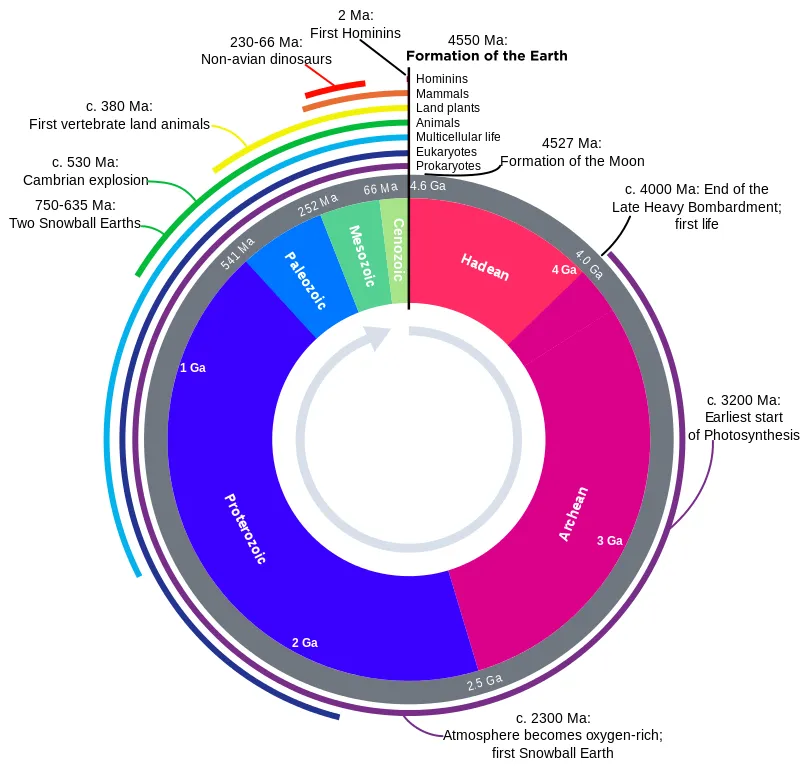
8.1Nguồn gốc vũ trụ
Vũ trụ dường như chứa vô số thiên hà và hệ hành tinh, và hệ của chúng ta chỉ chiếm một phần rất nhỏ. Nguồn gốc của vũ trụ và của Hệ Mặt Trời là bối cảnh để hiểu nguồn gốc và lịch sử ban đầu của Trái Đất.
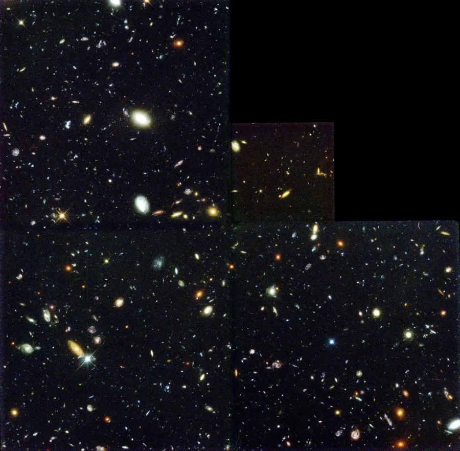
8.1.1 Thuyết Vụ Nổ Lớn
Cách giải thích phổ biến nhất về sự ra đời của vũ trụ là (big-bang theory). Thuyết này được thuyết tương đối rộng của Einstein và các quan sát thực nghiệm ủng hộ. Theo đó, vũ trụ hình thành từ một lõi vật chất đặc và nóng vô hạn; "vụ nổ" là sự giãn nở ra ngoài của toàn bộ vật chất và không gian, tạo ra các nguyên tử. Phổ học cho thấy hydro chiếm khoảng 74% toàn bộ vật chất trong vũ trụ. Vũ trụ đã giãn nở suốt 13,8 tỷ năm, và các quan sát gần đây cho thấy tốc độ giãn nở đang tăng.

Bằng chứng 1: Phổ học
(spectroscopy) đo các quang phổ sinh ra khi vật chất tương tác với hoặc phát ra bức xạ điện từ. Một quang phổ là một dải thuộc : các màu ánh sáng nhìn thấy, tia X, tử ngoại, vi sóng và sóng vô tuyến (Hình 8.5). Bước sóng được tạo ra hoặc hấp thụ bên trong nguyên tử, và mỗi nguyên tố có "dấu vân tay" bước sóng riêng. Ngay cả ánh sáng Mặt Trời cũng thiếu một số bước sóng; Joseph von Fraunhofer (1787–1826) quan sát được các khoảng trống này đầu thế kỷ 19, và nhiều thập kỷ sau các nhà khoa học mới gắn chúng với các nguyên tố trong lớp khí mà ánh sáng đi qua. Phổ học cho thấy Mặt Trời chủ yếu là hydro và heli, cho biết độ phổ biến của các nguyên tố trong những ngôi sao xa và trong vũ trụ nhìn thấy được, và còn dùng như một "đồng hồ tốc độ" giữa các vì sao.

Bằng chứng 2: dịch chuyển đỏ
(Doppler effect) làm tiếng xe hơi hay xe cứu thương chuyển từ cao xuống trầm khi xe chạy qua: sóng bị nén lại phía trước nguồn đang chuyển động (âm cao hơn) và bị giãn ra phía sau (âm trầm hơn) (Hình 8.6). Áp dụng cho ánh sáng của sao và thiên hà, hiệu ứng này cho biết tốc độ và hướng chuyển động của chúng. Vesto Slipher (1875–1969) và Edwin Hubble (1889–1953) phát hiện gần như mọi thiên hà ngoài Ngân Hà đều đang lùi xa nhau và xa chúng ta. Ánh sáng từ vật đang lùi xa bị kéo giãn về phía đầu đỏ của quang phổ, gọi là (redshift) (Hình 8.7). Hubble còn nhận thấy thiên hà càng xa thì dịch chuyển đỏ càng lớn, tức là lùi xa càng nhanh. Cách duy nhất để giải thích điều này là vũ trụ vẫn đang giãn nở; quan sát của Hubble là nền tảng của thuyết Vụ Nổ Lớn.

Bằng chứng 3: bức xạ phông vi sóng vũ trụ
(cosmic microwave background radiation) được Arno Penzias (1933–) và Robert Woodrow Wilson (1936–) tình cờ phát hiện khi họ cố loại bỏ nhiễu nền của một vệ tinh liên lạc. Đó là một năng lượng (nhiệt) rất yếu có mặt khắp vũ trụ, còn sót lại từ Vụ Nổ Lớn như một tiếng vọng (Hình 8.8).
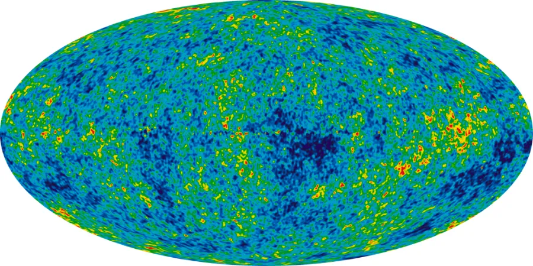
8.1.2 Tiến hóa sao
Các nhà thiên văn cho rằng Vụ Nổ Lớn tạo ra các nhẹ: chủ yếu là hydro, cùng lượng nhỏ heli, lithi và berili. Khoảng 90 nguyên tố nặng hơn còn lại được tạo ra về sau, bên trong các ngôi sao, như mô hình tiến hóa sao giải thích (Hình 8.9).

Sự ra đời của một ngôi sao
Sao bắt đầu từ các nguyên tố trôi nổi trong những đám mây khí và bụi lạnh, đang quay, gọi là (nebula) (Hình 8.10). Lực hấp dẫn, hoặc có thể một vụ nổ sao gần đó, làm vật chất co lại và quay thành hình đĩa. Vật chất dồn về tâm, lực hấp dẫn tăng lên lại hút thêm khối lượng, cho đến khi nhiệt độ và áp suất đạt ngưỡng tới hạn khởi phát phản ứng tổng hợp hạt nhân: một ngôi sao ra đời.
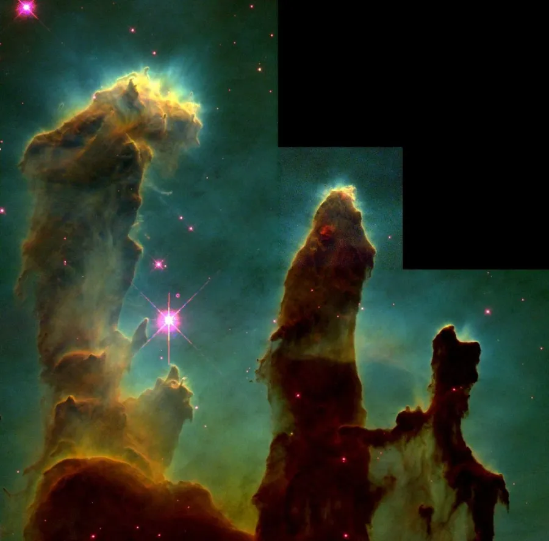
Phản ứng tổng hợp và giai đoạn chính
(fusion) là phản ứng hạt nhân, không phải phản ứng hóa học: hai hay nhiều hạt nhân (tâm của nguyên tử) bị ép vào nhau thành một nguyên tử mới lớn hơn, giải phóng năng lượng khổng lồ dưới dạng ánh sáng và bức xạ. Trong lõi sao, hydro tổng hợp thành heli (Hình 8.11), và năng lượng đó đến Trái Đất dưới dạng ánh sáng và nhiệt. Vì phản ứng diễn ra đều đặn, dễ dự đoán và sao chứa rất nhiều hydro, giai đoạn chính (main phase) này có thể kéo dài hàng tỷ năm, với kích thước và công suất gần như không đổi.
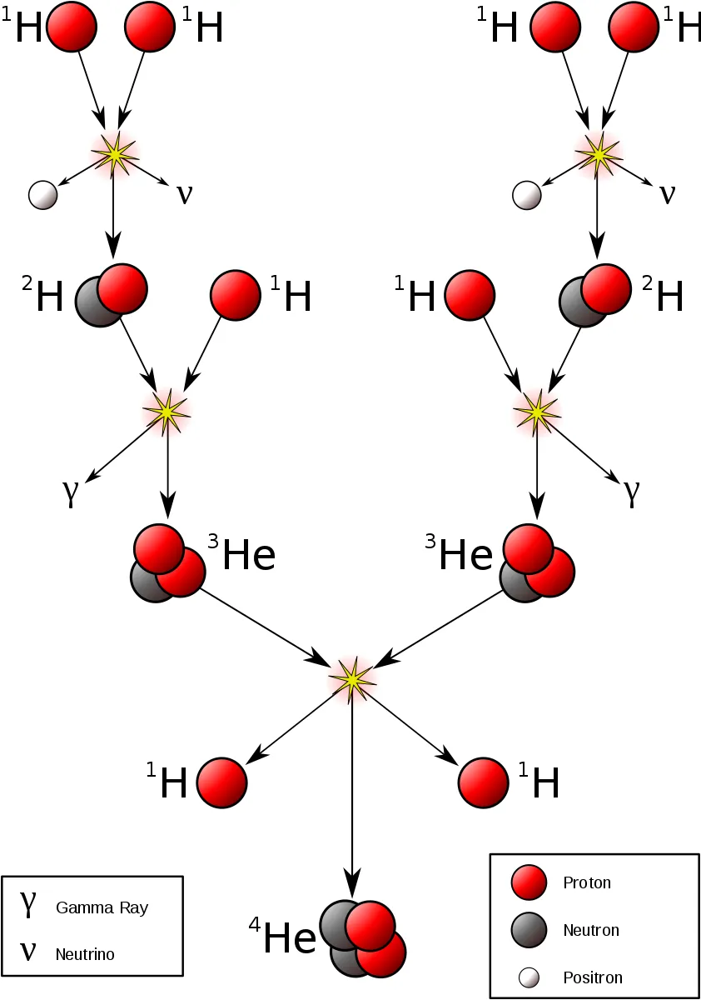
Giai đoạn sao khổng lồ
Khi một ngôi sao cạn hydro, nếu đủ lớn nó sẽ có đủ nhiệt độ và áp suất để tổng hợp heli thành các nguyên tố nặng hơn. Phản ứng mạnh hơn này làm sao to và sáng hơn: giai đoạn sao khổng lồ. Mặt Trời được dự báo bước vào giai đoạn này sau vài tỷ năm nữa, phình ra tới khoảng quỹ đạo Trái Đất và khiến sự sống không thể tồn tại. Khối lượng của sao trong giai đoạn chính quyết định nó tiến hóa thế nào (Hình 8.12). Ở các sao rất lớn, mỗi khi một nhiên liệu cạn, phản ứng chuyển sang nguyên tố nặng hơn, tạo ra carbon, oxy, v.v., cho đến sắt và niken. Điều này giải thích vì sao các thiên thể đá như Trái Đất có nhiều sắt và niken. Tổng hợp tiếp sẽ hấp thụ năng lượng thay vì giải phóng, mở đầu cho sự kết thúc của ngôi sao.
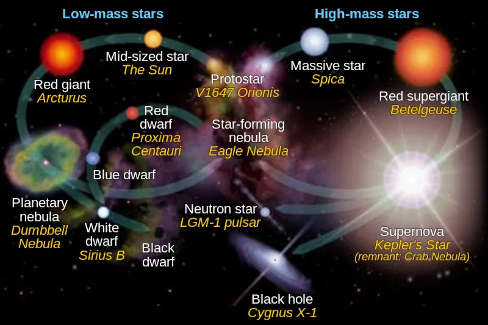
Cái chết của một ngôi sao
Khi phản ứng tổng hợp ngừng, lực hấp dẫn thắng trong cuộc giằng co với lực đẩy ra ngoài của phản ứng. Sao giống Mặt Trời có lớp ngoài sụp xuống rồi bị thổi bay thành một (planetary nebula). Sao khối lượng lớn hơn sụp mạnh hơn và nổ thành (supernova): sự sụp đổ của lõi dừng đột ngột và phát ra một sóng xung kích khổng lồ (Hình 8.13). Siêu tân tinh là vụ nổ mạnh nhất trong vũ trụ chỉ sau Vụ Nổ Lớn, và phản ứng tổng hợp trong đó có thể tạo ra mọi nguyên tố cho tới urani. Phần còn lại tùy vào kích thước ngôi sao (Bảng 8.1).

| Tàn dư | Từ loại sao | Bản chất |
|---|---|---|
| Sao giống Mặt Trời | "Than hồng" nóng của sao: phần lớn khối lượng nén vào một vật thể nhỏ, đặc, cỡ Trái Đất. | |
| Sao lớn hơn, nổ thành siêu tân tinh | Khối lượng nén chặt hơn nữa, đặc đến mức proton kết hợp với electron thành neutron. | |
| Những ngôi sao lớn nhất | Khối lượng co lại đến mức ánh sáng không thoát khỏi lực hấp dẫn; vật lý bên trong vẫn còn tranh luận. |

Kiểm tra: Câu hỏi Mục 8.1 trong giáo trình ↗
8.2Nguồn gốc Hệ Mặt Trời: giả thuyết tinh vân
Hệ Mặt Trời hình thành cùng lúc với Mặt Trời. (nebular hypothesis) cho rằng một đám mây bụi đang quay, chủ yếu gồm các nguyên tố nhẹ, dẹt lại thành (protoplanetary disk) rồi trở thành một : một ngôi sao với các hành tinh quay quanh. Tinh vân quay dồn phần lớn vật chất vào tâm, vì vậy Mặt Trời chiếm hơn 99% khối lượng Hệ Mặt Trời.
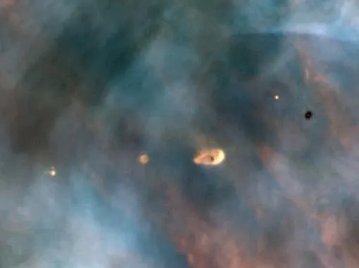
8.2.1 Sự sắp xếp và phân tách các hành tinh
Khi Hệ Mặt Trời hình thành, đĩa phân thành các vùng nhiệt độ khác nhau (Hình 8.16). Gần tâm, nhiệt độ cao đến mức chỉ kim loại và khoáng vật silicat có nhiệt độ nóng chảy cao mới ngưng tụ được. Xa hơn, trời đủ lạnh để các phân tử nhẹ như methan, amoniac, carbon dioxide và nước cũng ngưng tụ. Đó là lý do bốn hành tinh trong cùng là hành tinh đá, còn bốn hành tinh ngoài là hành tinh khí khổng lồ.
Hành tinh đá và hành tinh khí lớn lên theo cùng một cách. Các hạt bụi trong đĩa dính vào nhau nhờ lực tĩnh điện, sau đó nhờ lực hấp dẫn. Các cụm va chạm, dính lại và tạo thành tiền hành tinh, rồi tiếp tục lớn lên trong hàng nghìn đến hàng triệu năm khi có thêm vật chất từ đĩa (Hình 8.17). Mọi hành tinh đều bắt đầu với một lõi rắn: hành tinh đá bồi thêm đá, còn hành tinh khí bồi thêm khí và băng. Các hành tinh băng khổng lồ hình thành muộn hơn ở rìa ngoài của đĩa, thu ít khí và nhiều băng hơn (Bảng 8.2).
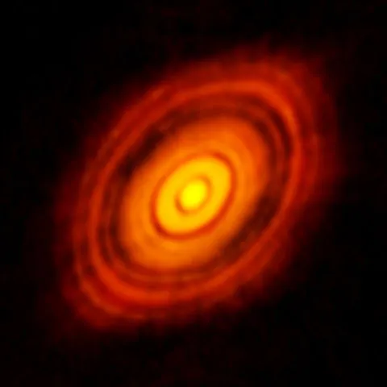
| Loại | Hành tinh | Thành phần | Cách lớn lên |
|---|---|---|---|
| Hành tinh đá | Thủy Tinh, Kim Tinh, Trái Đất, Hỏa Tinh | Kim loại và đá silicat | Lõi rắn bồi thêm đá, trong vùng nóng phía trong |
| Hành tinh khí khổng lồ | Mộc Tinh, Thổ Tinh | Hơn 90% là khí hydro và heli | Lõi rắn thu thêm rất nhiều khí và băng |
| Hành tinh băng khổng lồ | Thiên Vương Tinh, Hải Vương Tinh | Chủ yếu là băng methan, chỉ khoảng 20% hydro và heli | Hình thành muộn hơn ở rìa ngoài của đĩa, thu ít khí và nhiều băng hơn |
Các hành tinh khí khổng lồ cũng lớn hơn nhiều, vì hai lý do. Thứ nhất, tinh vân chứa nhiều khí và băng hơn kim loại và đá (dồi dào hydro, carbon, oxy, nitơ, nhưng ít silic và sắt), nên các hành tinh phía ngoài có nhiều vật liệu hơn. Thứ hai, lực hấp dẫn mạnh hơn giúp chúng gom được lượng lớn hydro và heli mà lực hấp dẫn yếu của các hành tinh nhỏ không giữ nổi.
Lực hấp dẫn khổng lồ của Mộc Tinh định hình phần còn lại của Hệ Mặt Trời. Nó làm vật chất gần đó chuyển động nhanh hơn, khiến các vật thể va vỡ thay vì dính vào nhau. Những va chạm này tạo ra giữa Hỏa Tinh và Mộc Tinh, một hành tinh "dở dang" và là nguồn của phần lớn (thường gọi là thiên thạch) rơi xuống Trái Đất ngày nay (Hình 8.18). Nghiên cứu tiểu hành tinh và vẫn thạch giúp các nhà địa chất xác định tuổi Trái Đất và thành phần của nhân, manti và vỏ. Mộc Tinh cũng có thể giải thích khối lượng nhỏ của Hỏa Tinh: khi Mộc Tinh di chuyển từ rìa trong ra rìa ngoài Hệ Mặt Trời, nó đã "nuốt" bớt vật chất.

Sao Diêm Vương và định nghĩa hành tinh
Vùng ngoài cùng của Hệ Mặt Trời có , nơi rải rác các thiên thể đá và băng, và xa hơn là , một vùng chứa các mảnh băng nhỏ, phân tán. Phần lớn sao chổi hình thành và quay quanh ở hai vùng này, trên những quỹ đạo kém đều đặn hơn phần còn lại của hệ. Sao Diêm Vương, từng là hành tinh thứ chín, nằm ở đây. Năm 2006, Đại hội đồng lần thứ XXVI của Liên đoàn Thiên văn Quốc tế (IAU) tước danh hiệu hành tinh của Sao Diêm Vương sau khi phát hiện Eris, một thiên thể có khối lượng lớn hơn. IAU quyết định không công nhận Eris là hành tinh nên cũng loại Sao Diêm Vương, đồng thời thu hẹp định nghĩa hành tinh (Bảng 8.3). Sao Diêm Vương và Eris hiện là .
| Tiêu chí | Sao Diêm Vương |
|---|---|
| 1. Đủ khối lượng để lực hấp dẫn kéo nó thành hình cầu | Đạt |
| 2. Không đủ khối lượng để khởi phát phản ứng tổng hợp hạt nhân | Đạt |
| 3. Đủ lớn để dọn sạch quỹ đạo khỏi các vi hành tinh lẽ ra đã nhập vào nó khi hình thành | Không đạt |

Kiểm tra: Câu hỏi Mục 8.2 trong giáo trình ↗
8.3Liên đại Hỏa thành
Các nhà địa chất dùng thang thời gian địa chất để đặt tên tuổi tương đối cho đá và sự kiện, phân chia các sự kiện lớn dựa trên những thay đổi lớn trong đá và hóa thạch (Học phần 7). (Hadean), đặt theo Hades, vị thần cai quản âm phủ trong thần thoại Hy Lạp, là liên đại cổ nhất, khoảng 4,5–4,0 tỷ năm trước.
Thời kỳ sớm nhất của Trái Đất có bề mặt nóng chảy một phần, núi lửa hoạt động và va chạm tiểu hành tinh (Hình 8.20). Ba nguồn khiến Trái Đất mới hình thành cực kỳ nóng: nén do hấp dẫn, phân rã phóng xạ và va chạm tiểu hành tinh. Phần lớn lượng nhiệt ban đầu ấy vẫn còn trong lòng Trái Đất. Ban đầu liên đại Hỏa thành được định nghĩa là thời kỳ Trái Đất ra đời, trước khi có nhiều loại đá và sự sống; nhưng các khoáng vật có tuổi 4,4 tỷ năm cho thấy đã có nước lỏng, và có thể có bằng chứng sự sống hơn 4,0 tỷ năm trước. Ghi nhận đáng tin cậy nhất về sự sống sớm, vi hóa thạch, bắt đầu từ 3,5 tỷ năm trước.

8.3.1 Nguồn gốc vỏ Trái Đất
Trái Đất sơ khai phần lớn nóng chảy, được lực hấp dẫn làm tròn như một quả cầu dung nham trong không gian. Khi lớp ngoài nguội đi, các khoáng vật có nhiệt độ nóng chảy cao (chuỗi phản ứng Bowen, Học phần 4) kết tinh thành những phiến vỏ sơ khai. Các phiến này có lẽ không bền và chìm trở lại vào magma, cho tới khi Trái Đất đủ nguội để nhiều mảnh lớn hơn tạo nên một lớp vỏ mỏng, nguyên thủy. Các nhà khoa học thường cho rằng lớp vỏ đó là vỏ đại dương, có thành phần , đầy hố va chạm như vỏ Mặt Trăng ngày nay. Kiến tạo mảng, và cùng với nó là sự hình thành vỏ lục địa , bắt đầu từ khi nào vẫn còn tranh luận.
Khi Trái Đất nguội và kết tinh, các khoáng vật tách ra theo tỷ trọng (Hình 8.21): khoáng vật felsic nhẹ nổi lên tạo thành , vật chất mafic và nặng hơn chìm xuống tạo manti, còn sắt và niken nặng nhất chìm vào nhân. Quá trình (differentiation) này biến một hành tinh đồng nhất thành một hành tinh phân lớp (không đồng nhất): vỏ felsic, vỏ mafic, siêu mafic và sắt-niken.
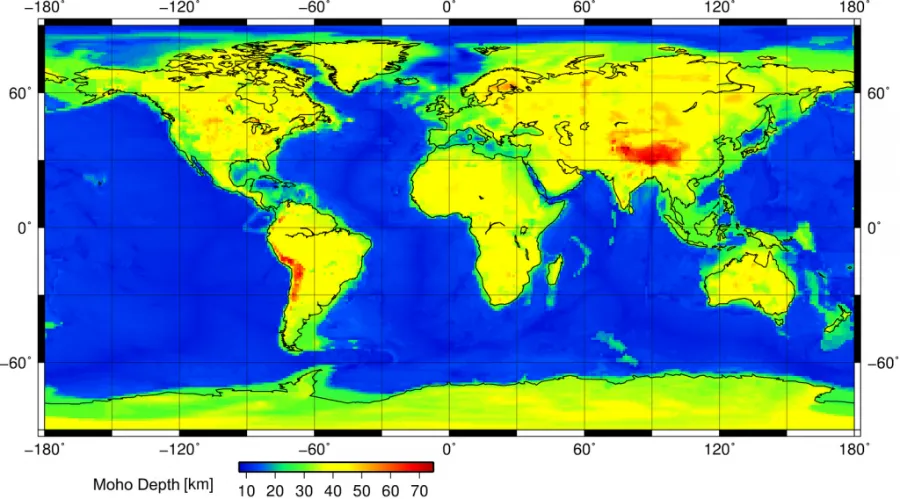
8.3.2 Nguồn gốc Mặt Trăng
Hai đặc điểm của Mặt Trăng định hướng các ý tưởng về nguồn gốc của nó. Trái Đất và Mặt Trăng ở trạng thái (tidally locked): một mặt của Mặt Trăng luôn hướng về Trái Đất, mặt kia không bao giờ nhìn thấy từ đây (Hình 8.23). Quan trọng nhất, mẫu đá Apollo cho thấy Trái Đất và Mặt Trăng có tỷ lệ đồng vị và hàm lượng chất bốc gần như giống hệt nhau, trong khi các thiên thể khác và vẫn thạch biến thiên nhiều hơn hẳn. Nếu hai thiên thể hình thành cùng nhau thì sự giống nhau đó được giải thích.

Những ý tưởng trước đây cho rằng Mặt Trăng bị bắt giữ từ một vùng khác của Hệ Mặt Trời, hình thành tại chỗ cùng Trái Đất, hoặc bị xé ra khỏi Trái Đất sơ khai; không ý tưởng nào giải thích hết các bằng chứng. (giant-impact hypothesis), được chấp nhận rộng rãi nhất, cho rằng một thiên thể cỡ một nửa Trái Đất đã chung ít nhất một phần quỹ đạo với Trái Đất rồi va vào nó, trộn lẫn và văng tung vật chất của cả hai (Hình 8.24). Phần vật chất văng ra có tỷ trọng thấp hơn kết lại nhiều hơn thành Mặt Trăng, điều có thể giải thích vì sao Trái Đất đặc hơn và có nhân dày hơn Mặt Trăng.
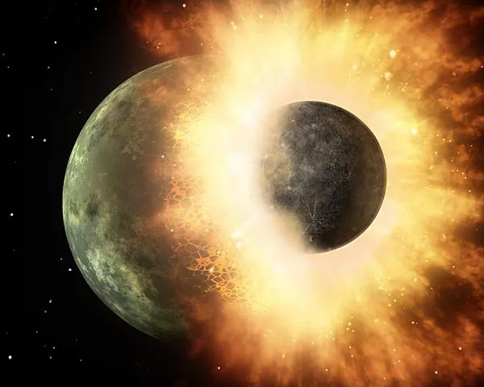
8.3.3 Nguồn gốc nước trên Trái Đất
Chưa có câu trả lời dứt khoát nước đại dương đến từ đâu. Có ba nguồn được đề xuất, và cả ba có thể đều góp phần (Bảng 8.4).
| Nguồn | Ý tưởng | Bằng chứng |
|---|---|---|
| Nước có từ bên trong hành tinh, thoát ra dưới dạng hơi trong các đợt phun trào núi lửa nhờ các quá trình kiến tạo | Mọi đợt phun trào đều có hơi nước, có khi hơn 1% thể tích; riêng nguồn này cũng có thể tạo ra nước trên bề mặt | |
| Sao chổi | Sao chổi gồm bụi và băng (phần lớn là nước đóng băng) rơi xuống bề mặt đã nguội trong các thời kỳ bị bắn phá dữ dội | Sao chổi mang băng nước (Hình 8.25), nhưng thành phần đồng vị nước của chúng kém khớp với nước Trái Đất |
| Vẫn thạch | Vẫn thạch tưởng khô vẫn chứa một ít nước, bị giữ trong cấu trúc khoáng vật | Nước Trái Đất khớp đồng vị với nước vẫn thạch tốt hơn nhiều so với nước sao chổi, dù các quá trình trên Trái Đất trong hơn 4 tỷ năm có thể đã làm thay đổi dấu hiệu đồng vị |
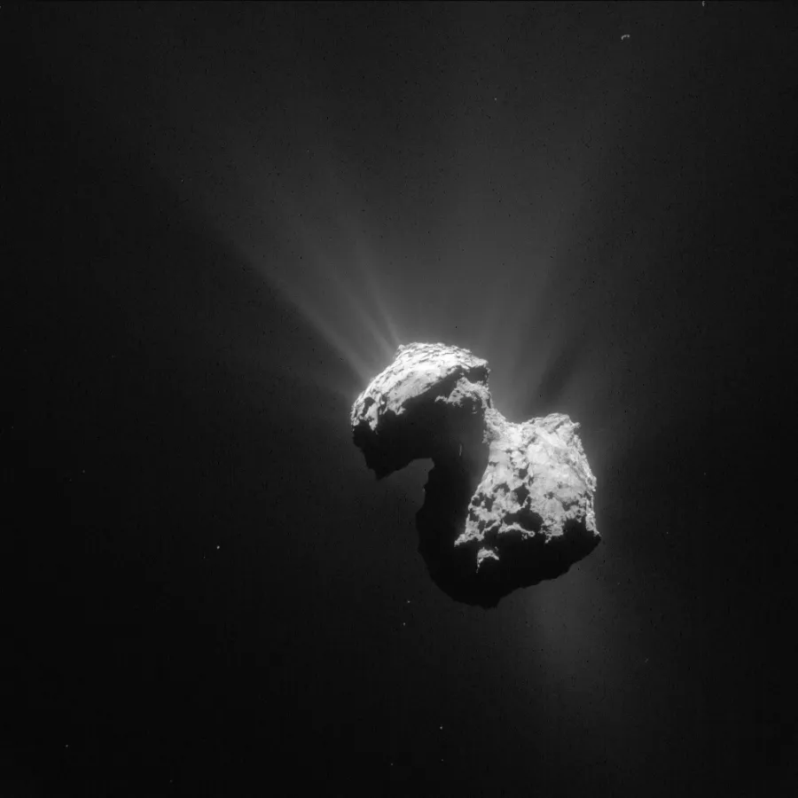
Kiểm tra: Câu hỏi Mục 8.3 trong giáo trình ↗
8.4Liên đại Thái cổ
(Archean), 4,0–2,5 tỷ năm trước, mang tên từ tiếng Hy Lạp nghĩa là "khởi đầu". Đây là khởi đầu của ghi nhận đá: đá và khoáng vật đã có từ thời Hỏa thành, nhưng thời Thái cổ để lại ghi nhận đá và hóa thạch phong phú hơn nhiều (Hình 8.26).

8.4.1 Đợt bắn phá lớn muộn
Khi Hệ Mặt Trời mới bắt đầu, các vật thể bay hỗn loạn, bồi đắp nên hành tinh và vệ tinh. Có bằng chứng rằng sau khi các hành tinh đã hình thành, khoảng 4,1–3,8 tỷ năm trước, một đợt tăng vọt thứ hai về va chạm của tiểu hành tinh và sao chổi đã đánh vào Trái Đất và Mặt Trăng: (late heavy bombardment). Các thiên thể trên quỹ đạo ổn định hoặc bán ổn định trở nên mất ổn định và va vào các vật thể khắp Hệ Mặt Trời. Sự kiện này còn gọi là đại họa Mặt Trăng (lunar cataclysm) vì phần lớn hố trên Mặt Trăng có từ thời này; bằng chứng được tìm thấy trong mẫu đá Mặt Trăng. Đợt bắn phá lúc đầu được chấp nhận rộng rãi, nhưng hẳn phải có một nguyên nhân khác gây ra đợt tăng thứ hai hàng trăm triệu năm sau. Một giả thuyết hàng đầu đổ lỗi cho cộng hưởng hấp dẫn giữa Mộc Tinh và Thổ Tinh, làm nhiễu quỹ đạo trong vành đai tiểu hành tinh và vành đai Kuiper, dựa trên một quá trình tương tự quan sát được ở hệ sao Eta Corvi (Hình 8.28).

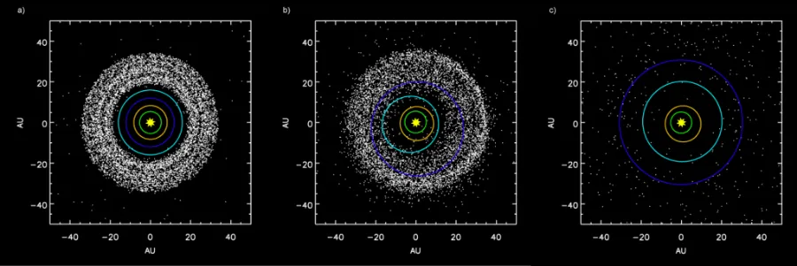
8.4.2 Nguồn gốc các lục địa
Kiến tạo mảng như hiện nay cần có lục địa, nhưng cách dễ nhất để tạo vật chất lục địa lại là đồng hóa và phân dị từ các lục địa sẵn có (Học phần 4). Bài toán "con gà và quả trứng" này khó giải vì vật chất lục địa quá cổ và rất nhiều bằng chứng đã mất do kiến tạo và xói mòn. Hoạt động núi lửa hẳn đã đưa vật chất lục địa đầu tiên lên bề mặt từ thời Hỏa thành, 4,4 tỷ năm trước, nhưng điều đó không giải quyết được vấn đề, vì dường như cần lớp vỏ dày hơn. Ý tưởng tốt nhất là sự chênh lệch tỷ trọng khiến vật chất felsic nhẹ nổi lên, còn vật chất siêu mafic và sắt kim loại nặng chìm xuống, tạo nên các lớp mà ngày nay nghiên cứu địa chấn phát hiện được (Hình 8.29). Các tiền lục địa sơ khai tích tụ vật chất felsic khi các quá trình kiến tạo mảng đang hình thành đưa vật chất nhẹ từ manti lên bề mặt, chẳng hạn nơi các cung đảo hình thành và kết lại với nhau (Hình 8.30).


Bằng chứng chắc chắn đầu tiên về kiến tạo mảng hiện đại xuất hiện vào cuối thời Thái cổ, nên khi đó hẳn đã có ít nhất một phần thạch quyển lục địa. Đó không nhất thiết là lúc kiến tạo mảng bắt đầu; dấu vết sớm hơn có thể đã bị chu trình thạch học xóa đi.
Phần lõi ổn định của các lục địa ngày nay là (craton), phần lớn hình thành trong thời Thái cổ (Hình 8.31, Hình 8.32). Nền cổ gồm hai phần: (shield), đá kết tinh nằm gần mặt đất, và (platform), đá trầm tích phủ lên khiên. Phần lớn nền cổ ít thay đổi, hoạt động kiến tạo diễn ra quanh chúng chứ không ở bên trong. Dù hình thành bằng cách nào, các lục địa Thái cổ đã sinh ra các lục địa Nguyên sinh, vốn chiếm ưu thế trên hành tinh ngày nay.

Thế nào là một lục địa, và vỏ lục địa kết thúc, vỏ đại dương bắt đầu ở đâu, vẫn còn tranh luận. Ở (passive margin), vỏ lục địa chuyển dần sang vỏ đại dương, còn vật chất cung đảo và điểm nóng có thể trông giống vỏ lục địa hơn vỏ đại dương. Lục địa thường có một nền cổ ở giữa với đá magma felsic. Những khối chìm dưới biển như Zealandia, bao gồm New Zealand, có thể được coi là lục địa (Hình 8.33). Vỏ lục địa không có nền cổ được gọi là (continental fragment), như đảo Madagascar ngoài khơi bờ đông châu Phi.

8.4.3 Sự sống đầu tiên trên Trái Đất
Sự sống nhiều khả năng bắt đầu vào cuối thời Hỏa thành hoặc đầu thời Thái cổ. Bằng chứng sớm nhất là các dấu hiệu hóa học, sợi vi thể và thảm vi sinh vật (Bảng 8.5). Bằng chứng hóa học và sợi vi thể yếu hơn hóa thạch, nhưng có bằng chứng hóa thạch vững chắc về sự sống 3,5 tỷ năm trước: các thảm vi sinh vật quang hợp gọi là , tìm thấy ở Úc.
| Tuổi | Bằng chứng | Nơi tìm thấy |
|---|---|---|
| 4,1 tỷ năm | Carbon có dấu hiệu hóa học gợi ý nguồn gốc hữu cơ | Bên trong hạt zircon |
| 3,8–4,3 tỷ năm | Sợi vi thể | Trầm tích miệng phun thủy nhiệt, Quebec, Canada |
| 3,5 tỷ năm | Hóa thạch bảo tồn tốt: stromatolit (thảm vi sinh vật quang hợp) | Úc |

Sự sống bắt nguồn thế nào vẫn chưa rõ. Ba giả thuyết được so sánh trong Bảng 8.6. Khí quyển sơ khai không có oxy, tạo thành một (reducing environment) giàu methan, carbon dioxide, các hợp chất lưu huỳnh và nitơ, giống khí quyển của các thiên thể khác trong Hệ Mặt Trời ngày nay (Hình 8.35). Từ đó, các nhà khoa học đã mở rộng việc tìm kiếm sự sống tới những nơi khác thường như mặt trăng băng Europa của Mộc Tinh.
| Giả thuyết | Ý tưởng | Ủng hộ |
|---|---|---|
| Nguồn gốc hóa học | Sự sống nảy sinh từ hóa học của khí quyển và đại dương sơ khai | phóng tia lửa điện vào khí quyển sơ khai mô phỏng trong bình kín và tạo ra axit amin, đơn vị cấu tạo nên protein |
| Miệng phun thủy nhiệt đáy biển sâu | Sự sống bắt đầu ở đáy đại dương sâu, nhờ nhiệt bên trong Trái Đất | Năm 1977 phát hiện một hệ sinh thái biệt lập quanh các miệng phun trên sống núi giữa đại dương, dựa trên thay vì quang hợp, lấy năng lượng từ nước nóng giàu hóa chất |
| Từ không gian | Sự sống hoặc các đơn vị cấu tạo của nó đến Trái Đất nhờ sao chổi hay vật thể khác | Đã tìm thấy axit amin trong sao chổi và vẫn thạch; điều này cũng khiến khả năng có sự sống ở nơi khác là cao |

Kiểm tra: Câu hỏi Mục 8.4 trong giáo trình ↗
8.5Liên đại Nguyên sinh
(Proterozoic, "sự sống sớm hơn") kéo dài từ 2,5 tỷ đến 541 triệu năm trước. Khi đó phần lớn trung tâm các lục địa đã hình thành và kiến tạo mảng đã bắt đầu. (cyanobacteria) đơn bào đã từ từ bổ sung oxy vào đại dương nhờ quang hợp (Hình 8.36). Khi chúng tiến hóa thành sinh vật đa bào, chúng biến đổi đại dương rồi khí quyển bằng lượng khổng lồ khí oxy tự do (O2): (Great Oxygenation Event, GOE). Thay đổi này xóa sổ nhiều vi khuẩn kỵ khí, vốn không sống được khi có oxy tự do, trong khi sinh vật hiếu khí nay phát triển mạnh.

Oxy cũng làm thay đổi hóa học của hành tinh (Hình 8.37). Trong môi trường không có oxy (môi trường khử) của thời Thái cổ, sắt hòa tan trong nước biển. Khi có oxy, sắt kết hợp với oxy và thành oxit sắt như hematit và magnetit. Chúng tích tụ cùng chert đỏ thành (banded-iron formation), có tuổi khoảng 2 tỷ năm (Hình 8.38). Vì quá trình kết tủa lấy oxy ra khỏi nước và khóa nó vào đá, nồng độ oxy giữ ở mức thấp trong thời gian dài. Khi kết tủa chững lại, oxy hòa tan làm bão hòa đại dương rồi thoát vào khí quyển. Sự oxy hóa khí quyển là khác biệt lớn nhất giữa môi trường Thái cổ và Nguyên sinh.
GOE cũng được cho là đã gây ra đợt băng hà đầu tiên của Trái Đất, (Huronian glaciation), khoảng 2,1 tỷ năm trước. Oxy tự do phản ứng với methan tạo ra carbon dioxide. Cả hai đều là , giữ nhiệt như lớp kính của nhà kính, nhưng methan cách nhiệt hiệu quả hơn; khi carbon dioxide thay thế methan, yếu đi và hành tinh lạnh đi.
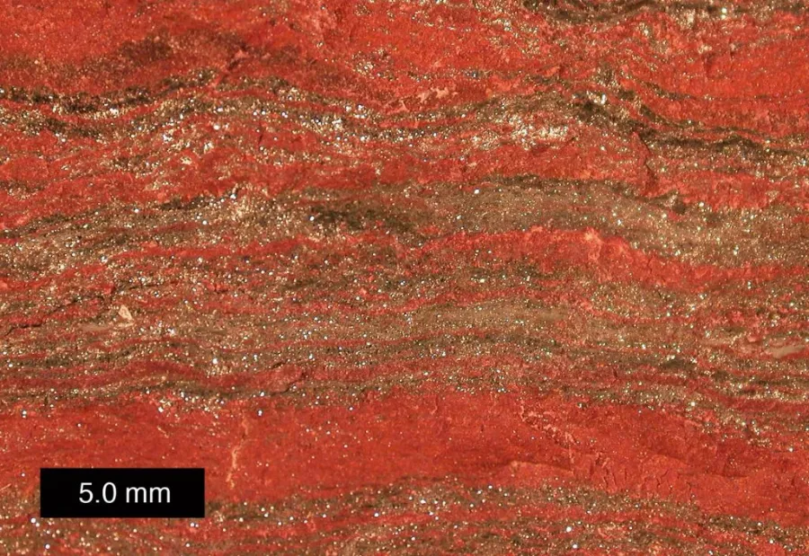
8.5.1 Rodinia
Đến thời Nguyên sinh, các mảng thạch quyển đã hình thành và chuyển động gần giống ngày nay. Khi các mảng va nhau và các bồn đại dương khép lại, chúng ghép thành siêu lục địa khoảng 1 tỷ năm trước (Hình 8.39). Rodinia tan rã khoảng 750–600 triệu năm trước, vào cuối thời Nguyên sinh. Một mảnh trong số đó là , về sau trở thành Bắc Mỹ. Các nhà địa chất phục dựng Rodinia như ghép hình, khớp và nối các dãy núi cổ, đồng thời dùng cổ từ để định hướng các mảnh theo cực từ bắc. Các bản phục dựng không thống nhất: có ít nhất sáu mô hình về cách Rodinia vỡ thành các mảnh như Úc, Nam Cực, một phần Trung Quốc, nền cổ Tarim ở phía bắc Himalaya, Siberia hay nền cổ Kalahari ở châu Phi. Sự tan rã tạo ra nhiều môi trường nước nông thuận lợi cho sự sống, thúc đẩy những bước đột phá tiến hóa mở đầu liên đại tiếp theo, Hiển sinh.

8.5.2 Sự sống tiến hóa
Sự sống thời Thái cổ và trước đó được bảo tồn rất ít. Bằng chứng hóa học và thuyết tiến hóa cho thấy đó là sinh vật đơn bào quang hợp, như vi khuẩn lam đã xây stromatolit và thải oxy vào khí quyển (Hình 8.40). Vi khuẩn lam, cổ khuẩn và vi khuẩn là (prokaryote). Một bước tiến hóa lớn là sự xuất hiện của (eukaryote), khoảng 2,1–1,6 tỷ năm trước (Bảng 8.7); nhánh nhân thực về sau sinh ra nấm, thực vật và động vật. Khoảng 1,2 tỷ năm trước, sinh vật nhân thực "phát minh" ra sinh sản hữu tính. Việc trộn vật chất di truyền của hai cá thể làm tăng mạnh biến dị ở thế hệ con, đẩy nhanh tiến hóa và làm sinh vật cũng như hệ sinh thái phức tạp hơn (Học phần 7).
| Nhân sơ | Nhân thực | |
|---|---|---|
| Tế bào | Đơn bào, không có nhân và các bào quan khác | Tế bào phức tạp hơn, có nhân và bào quan |
| ADN | Đơn giản hơn | ADN trong nhân cho phép sao chép và điều hòa phức tạp hơn |
| Bào quan | Không có | Ti thể (tạo năng lượng) và lục lạp (quang hợp) |
| Ví dụ | Vi khuẩn lam, cổ khuẩn, vi khuẩn | Nấm, thực vật, động vật |
| Xuất hiện | Thời Thái cổ hoặc sớm hơn | Khoảng 2,1–1,6 tỷ năm trước |
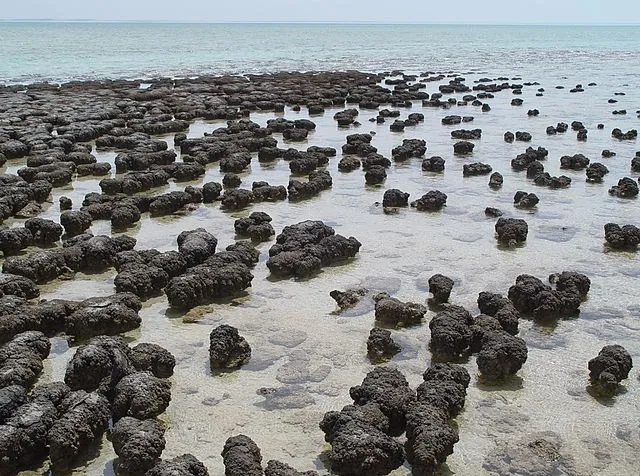

Đất liền thời Nguyên sinh không có thực vật hay động vật, nên mưa và sông xói mòn bề mặt trơ trụi nhanh hơn ngày nay nhiều. Kết quả là các lớp cát kết thạch anh tinh khiết dày, như quartzit ở lõi dãy núi Uinta, Utah.
(Ediacaran fauna), thuộc kỷ Ediacara (635,5–541 triệu năm trước), cho cái nhìn đầu tiên về sự đa dạng của các hệ sinh thái gần cuối thời Nguyên sinh (Hình 8.42). Những sinh vật thân mềm này nằm trong số các dạng sống đa bào đầu tiên, có lẽ giống sứa hoặc giun. Không có phần cứng như vỏ, chúng ít được bảo tồn, dù các nghiên cứu cho thấy chúng phân bố rộng trong đại dương. Các nhà khoa học vẫn tranh luận bao nhiêu loài là ngõ cụt tiến hóa và bao nhiêu là tổ tiên của các nhóm hiện đại. Sự chuyển từ sinh vật thân mềm Ediacara sang sinh vật có phần cứng, ở ranh giới Nguyên sinh và Hiển sinh, đã tạo khác biệt lớn cho khả năng đọc lịch sử sự sống.

Kiểm tra: Câu hỏi Mục 8.5 trong giáo trình ↗
8.6Liên đại Hiển sinh: Đại Cổ sinh
(Phanerozoic), từ 541 triệu năm trước đến nay, nghĩa là "sự sống hữu hình": đá của liên đại này đầy hóa thạch vì sinh vật có phần cứng (móng, vảy, vỏ, xương) dễ bảo tồn. Đá thuộc thời cổ hơn thì hiếm hơn và hiếm khi chứa hóa thạch, vì sinh vật khi đó thân mềm. Liên đại Hiển sinh chia thành ba đại: (Paleozoic, "sự sống cổ"), (Mesozoic, "sự sống giữa") và (Cenozoic, "sự sống mới").
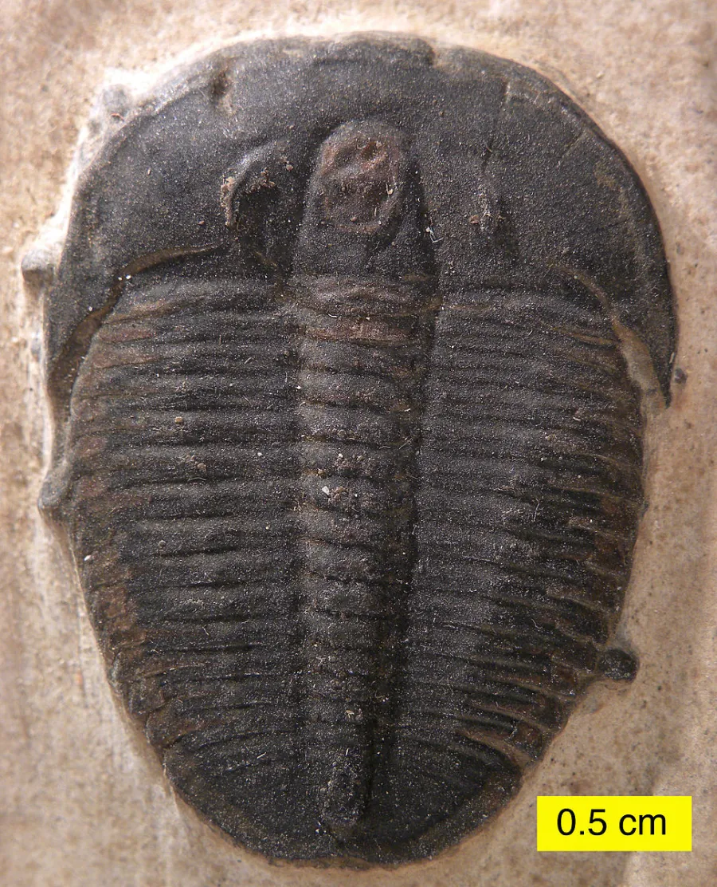
Sự sống đầu Đại Cổ sinh chủ yếu ở biển, nhưng đến giữa đại thực vật và động vật đã sống và sinh sản trên cạn. Cá tiến hóa ra hàm, và vây tiến hóa thành chi có khớp. Phổi giúp động vật rời biển, trở thành những (tetrapod) thở bằng không khí đầu tiên như lưỡng cư. Bò sát, với (amniotic egg), tiến hóa từ lưỡng cư; từ bò sát lại tiến hóa ra tổ tiên sớm của chim và thú, với vảy biến thành lông vũ và lông mao. Gần cuối đại, kỷ Than Đá có những khu rừng thuộc loại rộng nhất lịch sử Trái Đất, tàn tích của chúng trở thành than đá cung cấp năng lượng cho cách mạng công nghiệp.
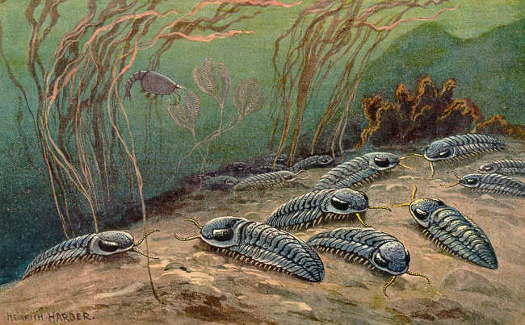
8.6.1 Kiến tạo và cổ địa lý Đại Cổ sinh
Trong Đại Cổ sinh, mực nước biển dâng và hạ bốn lần. Mỗi lần dâng, phần lớn Bắc Mỹ (Laurentia, Hình 8.45) bị một biển nhiệt đới nông bao phủ, để lại nhiều đá trầm tích biển như đá vôi chứa hóa thạch san hô và . Những lần hạ lớn để lại các trên diện rộng. Ngày nay vùng trung tâm lục địa có nhiều đá trầm tích biển Cổ sinh, và miền tây Bắc Mỹ có đá vôi biển dày trên các dãy núi khối đứt gãy như núi Timpanogos gần Provo, Utah.

Siêu lục địa (còn viết Pangaea, "toàn bộ đất liền", tên do Alfred Wegener đặt) đã hoàn chỉnh vào cuối Đại Cổ sinh (Hình 8.46). Nó gom mọi lục địa lớn nhờ hút chìm, bồi kết cung đảo, va chạm lục địa và khép bồn đại dương. Ở Bắc Mỹ, các sự kiện này diễn ra ở bờ đông: các (orogeny) Taconic, Acadia, Caledonia và Alleghany; dãy Appalachia là phần còn lại sau bào mòn của chúng. Một đại dương toàn cầu, , bao quanh Pangea. Chuyển động mảng về sau đẩy đại dương lấn vào Pangea thành một vịnh lớn, , cuối cùng chia Pangea thành hai siêu lục địa nhỏ hơn: (Laurentia và Á-Âu) và (Nam Mỹ, châu Phi, Ấn Độ, Úc và Nam Cực).

Trong khi bờ đông hoạt động kiến tạo, bờ tây là một yên tĩnh vào đầu Đại Cổ sinh, gần ranh giới Nevada–Utah ngày nay: một thềm lục địa nông, rộng, gần xích đạo cổ. Sang kỷ Devon, bắt đầu và kéo dài đến kỷ Pennsylvania: một cung đảo núi lửa, với hướng hút chìm quay ra xa Bắc Mỹ, được bồi kết vào bờ tây, tạo nên cao nguyên Antler và khởi đầu phần đất sau này thành phần lớn California, Oregon và Washington. Cuối Đại Cổ sinh, , một va chạm cung đảo khác, bắt đầu. Nó đánh dấu sự đổi hướng hút chìm về phía Bắc Mỹ, với một cung núi lửa dọc toàn bộ bờ tây từ cuối Cổ sinh đến đầu Trung sinh.
Cuối Đại Cổ sinh, bờ đông có một dãy núi rất cao do va chạm lục địa tạo nên Pangea, còn bờ tây có các vùng cao núi lửa nhỏ, rời rạc do bồi kết cung đảo. Sang Đại Trung sinh tình thế đảo ngược: bờ tây thành ranh giới mảng hoạt động, bờ đông thành rìa thụ động sau khi Pangea tan rã. Bảng 8.8 tập hợp mọi kiến tạo sơn trong chương.
| Kiến tạo sơn | Bờ | Thời gian | Diễn biến |
|---|---|---|---|
| Taconic, Acadia, Caledonia, Alleghany | Đông | Đại Cổ sinh | Hút chìm, bồi kết cung đảo và va chạm ghép nên Pangea; phần còn lại sau bào mòn là dãy Appalachia |
| Antler | Tây | Kỷ Devon đến kỷ Pennsylvania | Cung đảo bồi kết, hút chìm hướng ra xa Bắc Mỹ; cao nguyên Antler |
| Sonoma | Tây | Cuối Cổ sinh đến kỷ Tam Điệp | Một va chạm cung đảo khác (ở Nevada); hút chìm đổi hướng về phía Bắc Mỹ |
| Nevada | Tây | Kỷ Jura | Va chạm cung đảo; một cung núi lửa lớn kiểu Andes và đai nghịch chờm |
| Sevier | Tây | Kỷ Phấn Trắng | Cung núi lửa ở phía tây và đai uốn nếp–nghịch chờm kiểu vỏ mỏng ở phía đông |
| Laramide | Tây (lan sâu vào nội địa) | Đầu Đại Tân sinh | Nâng kiểu vỏ dày do hút chìm thoải: dãy Rocky, Black Hills, dãy Wind River, dãy Uinta, San Rafael Swell |
8.6.2 Tiến hóa trong Đại Cổ sinh
Bảng 8.9 tóm tắt từng kỷ; chi tiết ở phần sau.
| Kỷ | Ma | Sự sống | Kết thúc bằng |
|---|---|---|---|
| Cambri | 541–485 | Bùng nổ kỷ Cambri: xuất hiện phần cứng và phần lớn các ngành động vật; động vật đá phiến Burgess; Pikaia, động vật dây sống sớm | |
| Ordovic | 485–444 | Sự kiện Đa dạng hóa Sinh học Lớn kỷ Ordovic; san hô tập đoàn xây rạn | Tuyệt chủng hàng loạt 1 (kỷ băng hà, mực nước biển hạ) |
| Silur | 444–419 | Hàm; cá da phiến; thực vật (Cooksonia) và động vật trên cạn đầu tiên | |
| Devon | 419–359 | Thời đại Cá; cá vây thùy; Tiktaalik; cây gỗ và rừng đầu tiên | Tuyệt chủng hàng loạt 2 (sinh vật xây rạn chịu thiệt hại nặng nhất) |
| Than Đá (Mississippi, Pennsylvania) | 359–299 | Nồng độ oxy cao nhất từng có; rừng đầm lầy; chân khớp khổng lồ; động vật bốn chân hoàn toàn trên cạn đầu tiên; bò sát; băng hà Karoo | |
| Permi | 299–252 | Pangea khô hơn; bò sát chiếm ưu thế; động vật một cung bên (Dimetrodon), rồi Cung thú | Tuyệt chủng hàng loạt 3, lớn nhất từ trước đến nay |
Kỷ Cambri
Đại Cổ sinh bắt đầu với các phần cơ thể cứng đầu tiên (vỏ, gai, răng, vảy) và sự xuất hiện của phần lớn các ngành động vật, tức các kiểu cấu tạo cơ thể cơ bản, trong kỷ Cambri, 541–485 triệu năm trước. Sự bùng phát đa dạng đột ngột này là (Cambrian Explosion). Các nhà khoa học tranh luận đó là do tiến hóa nhanh trong khí hậu ấm hơn sau các đợt băng hà cuối Nguyên sinh, do phần cứng dễ bảo tồn hơn, hay chỉ do ghi nhận đá gần đây đầy đủ hơn; khu hệ Ediacara có thể đã đa dạng nhưng để lại ít hóa thạch.
Một trong những điểm hóa thạch Cambri tốt nhất là đá phiến Burgess ở miền tây Canada, do Charles Walcott (1850–1927) phát hiện năm 1909. Đó là một , nơi bảo tồn đặc biệt tốt, có cả dấu in phần mềm; các điểm tương tự ở Trung Quốc và Utah bổ sung bức tranh. Bí ẩn lớn nhất là những động vật không thuộc dòng dõi nào còn sống (Hình 8.47): bọ ba thùy mắt kép đầu tiên; Wiwaxia, phủ đầy tấm gai; Hallucigenia, một loài giun biết đi có gai; Opabinia, một loài chân khớp năm mắt có vòi kẹp; và Anomalocaris, kẻ săn mồi đầu bảng thời đó, có phần phụ để chộp mồi và miệng tròn với các tấm sắc. Cũng thuộc kỷ Cambri là Pikaia, một loài giun có đốt được cho là tổ tiên sớm nhất của (Chordata), gồm động vật có xương sống và con người.
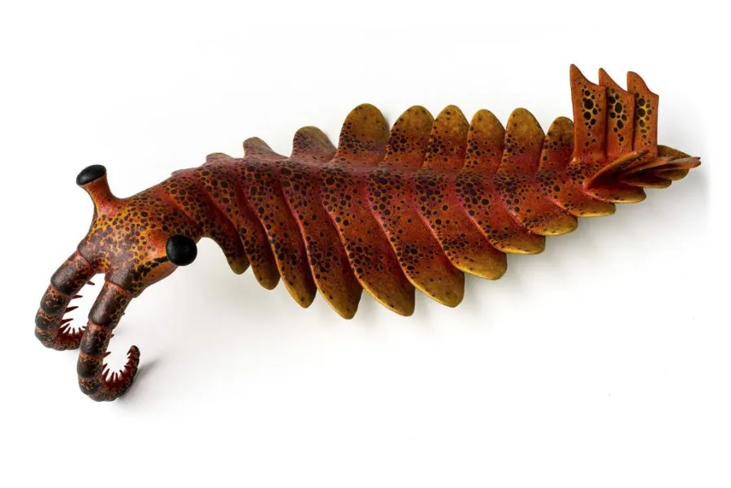
AMô hình phục dựng Anomalocaris, bảo tàng khoa học MUSE, Ý. Matteo De Stefano/MUSE, CC BY-SA. BBản hình trong mô tả Opabinia của Walcott năm 1912: fp phần phụ trước, e mắt, ths đốt ngực, i ruột, ab đốt bụng. Charles D. Walcott, phạm vi công cộng.
BBản hình trong mô tả Opabinia của Walcott năm 1912: fp phần phụ trước, e mắt, ths đốt ngực, i ruột, ab đốt bụng. Charles D. Walcott, phạm vi công cộng.
Kỷ Ordovic
Cuối kỷ Cambri, thân mềm, tay cuộn, ốc anh vũ, chân bụng, bút đá, da gai và bọ ba thùy phủ khắp đáy biển. Phần lớn các ngành đã có, nhưng sự đa dạng ở cấp họ, chi và loài vẫn thấp cho đến . Trong , động vật có xương sống và không xương sống trở nên đa dạng và phức tạp hơn. Nguyên nhân có thể là nhiệt độ ấm, thềm lục địa rộng gần xích đạo và hoạt động núi lửa mạnh hơn ở sống núi giữa đại dương, bổ sung dinh dưỡng cho đại dương; một số bằng chứng còn gắn nó với sự vỡ của một tiểu hành tinh và các va chạm vẫn thạch sau đó. Thân mềm, san hô và chân khớp sinh sôi và thống trị đại dương.
Sinh vật xây rạn, chủ yếu là san hô tập đoàn, là một bước tiến then chốt của kỷ Ordovic. Chúng dùng canxit xây các cấu trúc lớn giống rạn hiện đại như Rạn san hô Great Barrier (Hình 8.48), nơi sinh vật bơi quanh, ẩn náu và bò trên đó. Rạn quan trọng với các nhà cổ sinh vật học vì dễ bảo tồn, kích thước lớn và giữ nguyên cả hệ sinh thái tại chỗ (Hình 8.49).
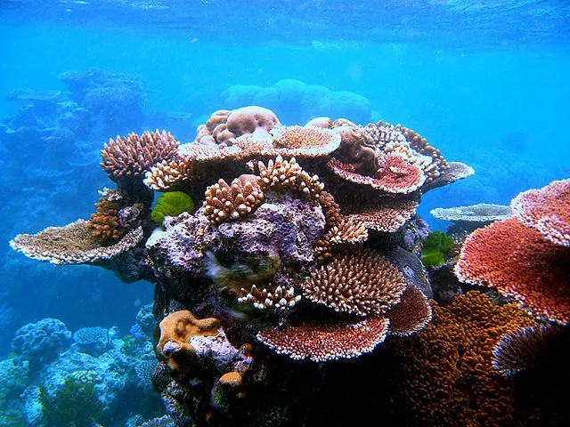

Trầm tích băng hà cho thấy một kỷ băng hà nhỏ đã làm hạ mực nước biển và gây ra một đợt lớn vào cuối kỷ Ordovic, đợt đầu tiên trong năm đợt ghi nhận trong hóa thạch, khi số loài biến mất đột ngột nhiều bất thường (Bảng 8.11).
Kỷ Silur
Sự sống hồi phục trong . Sự kiện tiến hóa lớn của kỷ này là hàm, phát triển từ đôi cung mang trước ở cá xương và cá mập; hàm có khớp mở ra nguồn thức ăn và ổ sinh thái mới. Cá có giáp, (placoderm), xuất hiện (Hình 8.50). Đá kỷ Silur cũng chứa bằng chứng đầu tiên về thực vật và động vật trên cạn. đầu tiên, Cooksonia, có mô gỗ, lỗ khí để trao đổi khí và gân dẫn nước và chất dinh dưỡng. Côn trùng, nhện, bọ cạp và giáp xác bắt đầu sống ở môi trường nước ngọt ẩm ướt trên cạn.

Kỷ Devon
là Thời đại Cá, với cá có giáp, cá có hàm và . Cá vây thùy, họ hàng của cá phổi và cá vây tay ngày nay, quan trọng vì đã tiến hóa thành động vật bốn chân, động vật có xương sống bốn chi đi được trên cạn (Hình 8.51). Tiktaalik, loài cá vây thùy biết đi trên cạn đầu tiên, xuất hiện khoảng 385 triệu năm trước; nó rõ ràng là cá nhưng có một số cấu trúc của động vật bốn chân, nên là một hóa thạch chuyển tiếp. Nhiều hóa thạch kỷ Devon giống động vật bốn chân hơn cá nhưng chưa sống hoàn toàn trên cạn. Thực vật trên cạn tiến hóa thành cây gỗ và rừng đầu tiên. Gần cuối kỷ Devon diễn ra đợt tuyệt chủng hàng loạt thứ hai; nó nghiêm trọng nhưng được định tuổi kém nhất, thời điểm của một hay nhiều sự kiện dao động lớn. Sinh vật xây rạn chịu thiệt hại nặng nhất, làm hệ sinh thái biển thay đổi mạnh.
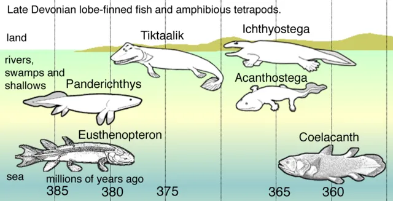
Kỷ Than Đá
Những động vật bốn chân sống hoàn toàn trên cạn đầu tiên xuất hiện vào kỷ Mississippi (đầu ). Khi đó động vật bốn chân đã tách thành hai nhóm từ một tổ tiên chung: lưỡng cư, thở không khí và sống trên cạn nhưng cần nước để nuôi trứng mềm, và động vật có màng ối. Bò sát đầu tiên (động vật có màng ối) sống và sinh sản hoàn toàn trên cạn, vì trứng có màng ối có vỏ bảo vệ không bị khô. Các nhà địa chất Bắc Mỹ chia kỷ Than Đá thành kỷ Mississippi và kỷ Pennsylvania. Đây là thời kỳ có nồng độ oxy cao nhất từng biết, với rừng dương xỉ, thạch tùng và đầm lầy phủ khắp đất liền. Điều đó góp phần tạo ra những loài chân khớp lớn nhất từ trước tới nay, như cuốn chiếu Arthropleura dài 2,5 m (Hình 8.52). Thực vật phát triển mạnh rút carbon dioxide khỏi khí quyển và làm khí hậu lạnh đi; đến giữa kỷ Than Đá, điều này dẫn tới một kỷ băng hà, , kéo dài đến đầu kỷ Permi. Bò sát thích nghi tốt hơn lưỡng cư nhiều và đa dạng hóa.

Kỷ Permi
Khi Pangea đã ghép xong, khí hậu khô hơn, và bò sát càng đa dạng và thống trị; các nhóm phát triển trong khí hậu ấm này về sau tỏa nhánh thành khủng long. Một nhóm khác, (Synapsida), cuối cùng tiến hóa thành thú. Các loài động vật một cung bên như Dimetrodon lưng có buồm thường bị nhầm là khủng long (Hình 8.53). Pelycosauria (kỷ Pennsylvania đến đầu kỷ Permi, như Dimetrodon) là những động vật một cung bên đầu tiên có đặc điểm sớm của thú, chẳng hạn răng phân hóa rõ: răng cửa, răng nanh lớn ở cả hai hàm và răng má (răng tiền hàm và răng hàm). Từ cuối kỷ Permi, nhóm động vật một cung bên thứ hai, (Therapsida, "bò sát giống thú"), tiến hóa và trở thành tổ tiên của thú.

Tuyệt chủng hàng loạt kỷ Permi
Đại Cổ sinh kết thúc bằng đợt tuyệt chủng hàng loạt lớn nhất lịch sử Trái Đất, . Tới 96% loài sinh vật biển và 70% động vật có xương sống trên cạn bị tuyệt chủng; bọ cạp biển và bọ ba thùy không bao giờ xuất hiện lại. Nguyên nhân vẫn còn tranh luận, nhưng ý tưởng hàng đầu là hoạt động núi lửa của (Siberian Traps), một trong những khối (flood basalt) lớn nhất Trái Đất, có tuổi trùng thời điểm tuyệt chủng (Hình 8.54). Hơn 3 triệu km³ đã phun ra, gấp khoảng 4.000.000 lần đợt phun năm 1980 của núi St. Helens. Phun trào thải ra khí độc, sol khí và khí nhà kính, và có thể đã đốt cháy các mỏ than rộng lớn, giải phóng methan. Một hiệu ứng nhà kính mất kiểm soát có thể đã làm khí hậu thay đổi nhanh, axit hóa đại dương, phá vỡ chuỗi thức ăn và chu trình carbon.
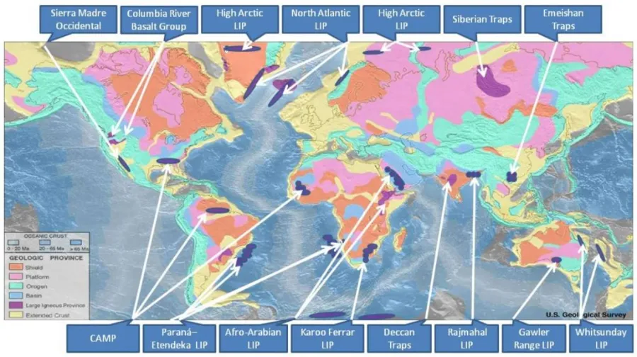
Kiểm tra: Hoạt động Mục 8.6 trong giáo trình ↗
8.7Liên đại Hiển sinh: Đại Trung sinh
Sau đợt tuyệt chủng kỷ Permi, Đại Trung sinh ("sự sống giữa") kéo dài từ 252 đến 66 triệu năm trước. Khi Pangea tan rã, thú, chim và thực vật có hoa phát triển. Đại Trung sinh nổi tiếng nhất là thời đại bò sát, trên hết là khủng long (Hình 8.55).
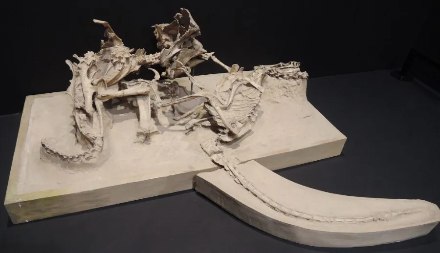
8.7.1 Kiến tạo và cổ địa lý Đại Trung sinh
Pangea bắt đầu tan rã khoảng 210 triệu năm trước vào cuối kỷ Tam Điệp, ở vùng sau này là miền đông Canada và Hoa Kỳ (Hình 8.56). Bằng chứng rõ ràng đến từ tuổi trầm tích trong các bồn tách giãn của Siêu nhóm Newark, thể sill Palisades ở miền đông Bắc Mỹ và đáy Đại Tây Dương. Do tách giãn đáy đại dương, đáy Đại Tây Dương cổ nhất nằm dọc bờ bắc Phi và bờ đông Bắc Mỹ, trẻ nhất nằm dọc sống núi giữa đại dương (Hình 8.57). Vậy Đại Tây Dương mở ra đầu tiên ở đó, khi Sống núi Giữa Đại Tây Dương non trẻ bắt đầu tạo đáy biển. Nam Đại Tây Dương mở tiếp theo, khi Nam Mỹ tách khỏi trung và nam châu Phi. Cuối cùng, sau Đại Trung sinh, phần cực bắc Đại Tây Dương mở ra khi Greenland và Scandinavia tách nhau. Các rìa tách giãn trở thành rìa thụ động ở bờ đông châu Mỹ ngày nay.
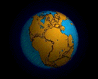
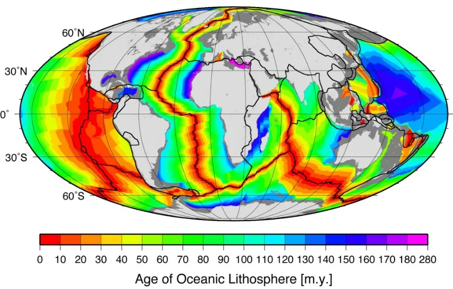
Ở miền tây Bắc Mỹ, một rìa hoạt động với hút chìm chi phối phần lớn hoạt động kiến tạo Đại Trung sinh. Một va chạm cung đảo khác có thể đã tạo nên kiến tạo sơn Sonoma ở Nevada (cuối Cổ sinh đến kỷ Tam Điệp). Sang kỷ Jura, một va chạm cung đảo nữa gây ra (Nevadan orogeny), một cung núi lửa lớn kiểu Andes và đai nghịch chờm. tiếp nối trong kỷ Phấn Trắng: một cung núi lửa ở phía tây và một đai uốn nếp–nghịch chờm (thin-skinned) ở phía đông, nơi các chồng đứt gãy và nếp uốn nông xây nên địa hình (Hình 8.58). Nhiều cấu trúc ở dãy Rocky ngày nay có từ kiến tạo sơn này.

Hoạt động kiến tạo cũng tạo ra bồn trũng trước núi Nội địa phía Tây kỷ Phấn Trắng, bị ngập khi mực nước biển cao, tạo thành (Cretaceous Interior Seaway) (Hình 8.59). Mảng hút chìm từ phía tây là , một mảng đại dương nối với mảng Thái Bình Dương (tàn dư ngày nay gồm mảng Juan de Fuca ngoài khơi Tây Bắc Thái Bình Dương). Hút chìm khi đó thoải vì phần mảng Farallon chìm xuống còn rất trẻ, nóng và nhẹ, và điều này làm võng miền trung Bắc Mỹ. Hút chìm thoải, tốc độ tách giãn và hút chìm tăng, nhiệt độ cao và băng tan đều làm mực nước biển dâng. Một biển nội lục nông trải dài từ vịnh Mexico đến Bắc Băng Dương, chia Bắc Mỹ thành Laramidia (phía tây) và Appalachia (phía đông) trong 25 triệu năm. Đầm lầy ven bờ biển này tạo ra nhiều mỏ than ở Utah và Wyoming. Đến cuối kỷ Phấn Trắng, khí hậu lạnh đi khiến biển rút.
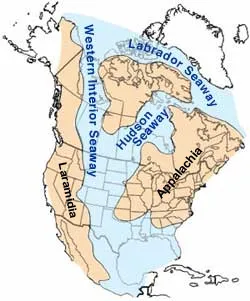
8.7.2 Tiến hóa trong Đại Trung sinh
Kỷ Tam Điệp
Đại Trung sinh do bò sát thống trị, đặc biệt là khủng long. Các hệ sinh thái bị tàn phá bởi đợt tuyệt chủng kỷ Permi mất hơn 30 triệu năm mới hồi phục hoàn toàn trong . Nhiều nhóm hiện đại xuất hiện lần đầu: ếch (lưỡng cư), rùa (bò sát), ngư long và thằn lằn cổ rắn (bò sát biển, Hình 8.61), thú và (Archosauria, "bò sát thống trị"). Thằn lằn chúa gồm các nhóm tuyệt chủng cuối kỷ Tam Điệp, (Pterosauria), cá sấu và khủng long. Giống thú có nhau về sau, Thằn lằn chúa chiếm mọi môi trường lớn: trên cạn (khủng long), trên không (dực long), dưới nước (cá sấu) và ngoài biển khơi (cá sấu biển). Dực long là động vật có xương sống đầu tiên biết bay; giống khủng long và thú, chúng khởi đầu nhỏ bé trong kỷ Tam Điệp.
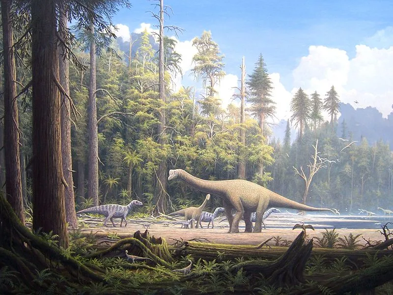

Cuối kỷ Tam Điệp xảy ra đợt tuyệt chủng hàng loạt lớn thứ tư, có lẽ do bazan lũ của (Central Atlantic Magmatic Province). Nó xóa sổ một số dòng dõi và giúp những nhóm sống sót như thú, dực long, bò sát biển (ngư long, thằn lằn cổ rắn, thương long) và khủng long tiến hóa.
Thú bắt nguồn từ một tổ tiên động vật một cung bên giống bò sát, có thể vào cuối Đại Cổ sinh. Chúng vẫn nhỏ và chủ yếu sống về đêm, con mồi lớn nhất chỉ là côn trùng; tuần hoàn máu nóng và bộ lông có thể đã phát triển để thích nghi với lối sống này (Hình 8.62).
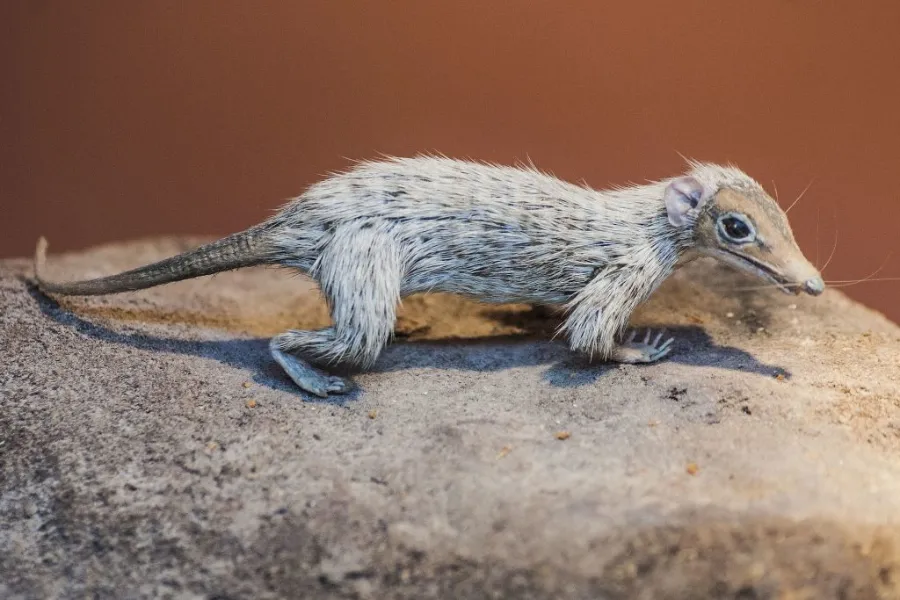
Kỷ Jura
Trong ấm và nhiệt đới hơn, các nhóm vốn đã phổ biến phát triển mạnh. Khủng long, tương đối nhỏ trong kỷ Tam Điệp, trở nên thực sự khổng lồ. Khủng long được chia thành hai nhóm, khủng long hông thằn lằn và (Ornithischia), theo cấu trúc hông, tức hướng của xương mu và xương ngồi (Hình 8.63, Bảng 8.10), dù một ý tưởng mới về dòng dõi khủng long gần đây đã đặt nghi vấn về cách chia này. Phần lớn khủng long kỷ Tam Điệp thuộc (Saurischia), và tất cả đều đi hai chân. Ưu thế then chốt của chúng là xương hông và cổ chân đưa chân vào thẳng dưới thân, khác với dáng nửa đứng của cá sấu hay dáng bò của các bò sát khác. Cũng trong kỷ Jura, Eophis, loài rắn cổ nhất, tiến hóa.
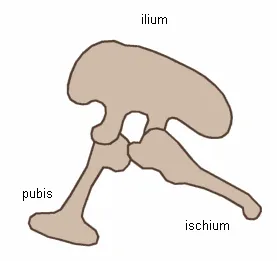
A · hông thằn lằn (Saurischia)Cấu trúc hông mở, giống thằn lằn. Fred the Oyster, CC BY-SA. B · hông chim (Ornithischia)Cấu trúc hông đóng, giống chim. Fredrik, CC BY-SA.
B · hông chim (Ornithischia)Cấu trúc hông đóng, giống chim. Fredrik, CC BY-SA.
| hông thằn lằn (Saurischia) | hông chim (Ornithischia) | |
|---|---|---|
| Hông | Mở, giống thằn lằn | Đóng, giống chim |
| Nhóm chính | (Sauropoda) ăn thực vật, cổ dài, khổng lồ (tới 100 tấn); (Theropoda) ăn thịt, đi hai chân | Stegosaurus, Iguanodon, Triceratops, Ankylosaurus, Pachycephalosaurus |
| Thức ăn | Khủng long chân thằn lằn ăn thực vật; khủng long chân thú ăn thịt, có thể trừ nhóm therizinosaur | Tất cả ăn thực vật, thường có mỏ giống rùa ở đầu miệng |
Hóa thạch khủng long đầu và giữa kỷ Jura rất ít, nhưng đến cuối kỷ Jura khủng long đã thống trị hành tinh, với hông thằn lằn đa dạng hóa thành khủng long chân thằn lằn và khủng long chân thú (Hình 8.64).
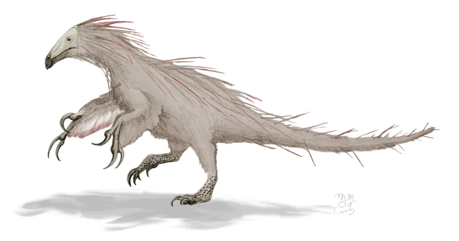
Dực long lớn lên và đa dạng hóa trong kỷ Jura, và chim xuất hiện (Hình 8.65). Archaeopteryx, một dạng tưởng như lai giữa khủng long và chim từ Lagerstätte Solnhofen ở Đức, mở đầu cuộc thảo luận về nguồn gốc loài chim, chỉ vài năm sau khi Darwin xuất bản Nguồn gốc các loài. Những khủng long chân thú nhỏ ăn thịt nhiều khả năng là nhánh đã trở thành chim, vì có đặc điểm chung. Chim bay chủ động tiến hóa thế nào và khi nào vẫn còn tranh luận: chạy lấy đà, lượn từ trên cây, hay kết hợp (vỗ cánh để hỗ trợ leo).

Kỷ Phấn Trắng
Trong , khủng long và các động vật khác tiếp tục đa dạng hóa, chuyên hóa và thống trị. Trên cạn, thay đổi lớn nhất là hệ thực vật chuyển sang ưu thế của (angiosperm), thực vật có hoa và hạt, xuất hiện trong kỷ Phấn Trắng. Đến cuối kỷ, chúng đã thay thế (cây thường xanh) và dương xỉ làm thực vật chủ đạo của rừng, và theo chương sách nhiều đồng bằng đã thành đồng cỏ vào cuối Đại Trung sinh. Ong và kiến (côn trùng xã hội đơn bội–lưỡng bội) bắt nguồn từ tổ tiên giống ong bắp cày kỷ Jura, đồng tiến hóa cùng thực vật có hoa. Sự tan rã của Pangea cũng định hình đa dạng sinh học: trên các lục địa đảo biệt lập, động vật rẽ sang những hướng tiến hóa kỳ lạ, như khủng long chân thằn lằn titanosaur khổng lồ Argentinosaurus và khủng long chân thú Giganotosaurus ở Nam Mỹ.
Đợt tuyệt chủng K-Pg (K-T)
Giống Đại Cổ sinh, Đại Trung sinh kết thúc bằng một đợt tuyệt chủng hàng loạt: (K-Pg, trước gọi là K-T), 66 triệu năm trước (Hình 8.66). Nhiều khả năng nguyên nhân là một (bolide) lớn từ ngoài Trái Đất, như tiểu hành tinh, vẫn thạch hay sao chổi, đâm vào Trái Đất (Hình 8.67). Chín mươi phần trăm loài sinh vật phù du, 75% loài thực vật và toàn bộ khủng long bị tuyệt chủng.
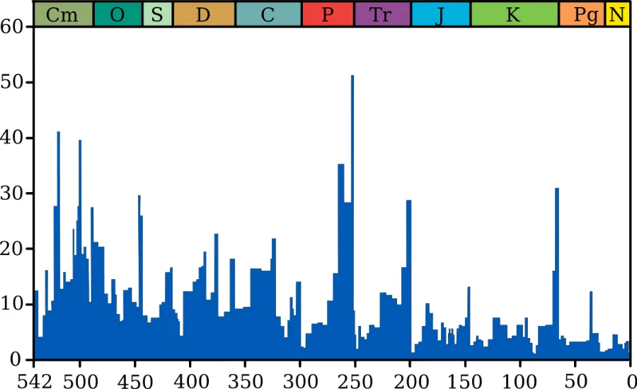
Bằng chứng về vụ va chạm:
- . Hiếm trên Trái Đất nhưng phổ biến hơn trong vẫn thạch, iridi có nồng độ cao hơn ở một lớp đá hình thành tại ranh giới K-T trên khắp thế giới.
- Mảnh vụn va chạm. Các hạt đá nóng chảy hình cầu và (shocked quartz), vốn chỉ hình thành ở nơi va chạm, được tìm thấy ở nhiều nơi trên thế giới.
- Hậu quả. Xung nhiệt mạnh của vụ va chạm có thể giải thích cháy rừng toàn cầu, mưa axit mạnh, sự phong phú của dương xỉ (loài cây đầu tiên mọc lại sau cháy rừng), bụi trong không khí làm nhiệt độ giảm sau đó, và một đợt sóng thần cao 2 km suy ra từ trầm tích từ Texas đến Alabama.
- Hố va chạm. được xác nhận năm 1991 nhờ dữ liệu địa vật lý của các công ty dầu khí (Hình 8.68). Rộng khoảng 180 km, nó là hố va chạm lớn thứ ba đã được xác nhận trên Trái Đất, nhưng khó tìm vì một phần nằm dưới nước và một phần bị rừng rậm Yucatán che khuất. Lõi khoan ở vành đỉnh trung tâm chứa granit, cho thấy vụ va chạm đã nâng đá móng từ độ sâu vài dặm lên gần mặt đất. Năm 2010, một nhóm quốc tế tổng hợp 20 năm nghiên cứu và kết luận vụ va chạm là nguyên nhân tuyệt chủng.
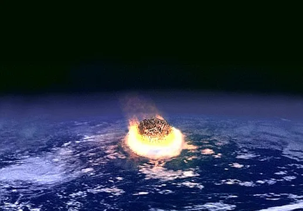

Các sự kiện khác có thể đã góp phần. Mực nước biển khi đó đang hạ dần, điều gắn với tuyệt chủng sinh vật biển, dù so sánh thay đổi từ từ và đột ngột rất khó với ghi nhận hóa thạch không đầy đủ. Bazan lũ ở Ấn Độ, hơn 1,3 triệu km³ vật chất, là mối nguy lớn cho các hệ sinh thái và có thể chịu một phần trách nhiệm (Hình 8.69). Có người cho rằng vụ va chạm và các đợt phun trào trùng hợp quá mức và đã gắn hai sự kiện với nhau.

| # | Đợt tuyệt chủng | Nguyên nhân có thể (theo chương) | Bị ảnh hưởng nặng nhất |
|---|---|---|---|
| 1 | Cuối kỷ Ordovic | Kỷ băng hà nhỏ, mực nước biển hạ | Số loài nhiều bất thường |
| 2 | Devon muộn | Không nêu; thời điểm không rõ | Sinh vật xây rạn |
| 3 | Cuối kỷ Permi (252 Ma), lớn nhất | Núi lửa trap Siberia: khí nhà kính, axit hóa đại dương | Tới 96% loài sinh vật biển, 70% động vật có xương sống trên cạn; bọ ba thùy, bọ cạp biển |
| 4 | Cuối kỷ Tam Điệp (201 Ma) | Có lẽ bazan lũ Tỉnh Magma Trung Đại Tây Dương | Một số dòng dõi Thằn lằn chúa |
| 5 | Cuối kỷ Phấn Trắng, K-Pg (66 Ma) | Va chạm thiên thể ở Chicxulub; có thể cả trap Deccan và mực nước biển hạ | 90% loài sinh vật phù du, 75% loài thực vật, toàn bộ khủng long |
Kiểm tra: Câu hỏi Mục 8.7 trong giáo trình ↗
8.8Liên đại Hiển sinh: Đại Tân sinh
Đại Tân sinh ("sự sống mới") là thời đại của thú, khi thú, kể cả tổ tiên loài người, trở nên chiếm ưu thế và to lớn (Hình 8.70). Chim cũng phát triển mạnh trong các ổ sinh thái khủng long bỏ trống. Phần lớn Đại Tân sinh tương đối ấm; ngoại lệ chính là kỷ băng hà bắt đầu khoảng 2,58 triệu năm trước và, dù gần đây ấm lên, vẫn tiếp diễn đến nay. Ở phía tây, các dịch chuyển kiến tạo gây ra núi lửa và cuối cùng biến đới hút chìm lâu đời thành một ranh giới chuyển dạng.

8.8.1 Kiến tạo và cổ địa lý Đại Tân sinh
Trong Đại Tân sinh các mảng dịch chuyển về những vị trí quen thuộc hơn. Thay đổi lớn nhất là sự khép lại của đại dương Tethys qua các va chạm như Alps, Zagros và Himalaya; va chạm Himalaya bắt đầu khoảng 57 triệu năm trước và vẫn tiếp diễn.
Hút chìm ngoài khơi miền tây Hoa Kỳ tiếp tục từ Đại Trung sinh. Sau kiến tạo sơn Sevier là vào đầu Đại Tân sinh. Khác với Sevier, nó thuộc (thick-skinned): liên quan đến đá vỏ sâu hơn và nâng lên những khối vồng về sau thành dãy Rocky, Black Hills, dãy Wind River, dãy Uinta và San Rafael Swell. Mảng hút chìm còn trẻ và gần trung tâm tách giãn, nên tỷ trọng thấp và khó chìm. Thay vì chìm thẳng vào manti, nó nằm thoải ra và trượt về phía đông dưới lục địa, nâng núi cao cách rìa lục địa hàng trăm dặm (Hình 8.71).

Có lẽ thay đổi kiến tạo quan trọng nhất của Đại Tân sinh ở Bắc Mỹ là California chuyển từ ranh giới hội tụ (hút chìm) sang ranh giới chuyển dạng (Hình 8.72). Hút chìm khiến mảng Farallon hội tụ với mảng Bắc Mỹ. Ở phía bên kia sống núi giữa đại dương, mảng Thái Bình Dương đang di chuyển ra xa Bắc Mỹ. Khi đới hút chìm "nuốt" sống núi, mảng Thái Bình Dương tiếp xúc trực tiếp với Bắc Mỹ, và chuyển động tương đối trở thành chuyển dạng thay vì hội tụ. Đó trở thành hệ thống (Hình 8.73).
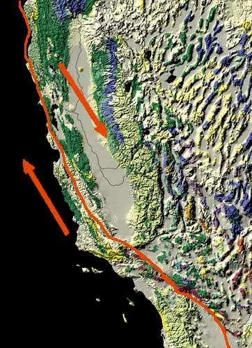
Khi San Andreas phát triển, lực theo hướng đông–tây lan khắp miền tây Hoa Kỳ, tạo nên tỉnh (Basin and Range). Trong 18 triệu năm qua đứt gãy chuyển dạng đã đổi vị trí, làm xoắn các dãy núi quanh Los Angeles, và các đứt gãy mới ở vùng hoang mạc đông nam California có thể trở thành một đứt gãy kiểu San Andreas trong tương lai. Trong quá trình chuyển đổi này, tấm Farallon gần nằm ngang bắt đầu chìm vào manti, để vật chất quyển mềm dâng lên quanh nó và gây hoạt động magma: (Oligocene ignimbrite flare-up), một trong những giai đoạn núi lửa đáng kể nhất từng có. Nó bao gồm đợt phun trào đơn lẻ lớn nhất đã xác nhận, tuf Fish Canyon 5.000 km³.
8.8.2 Tiến hóa trong Đại Tân sinh
Hóa thạch cho thấy năm nhóm thú sớm, được nhận diện chủ yếu qua hóa thạch răng, phần cứng nhất của bộ xương động vật có xương sống. Quan trọng nhất ở đây là Eupantotheria, nhóm tách ra trong kỷ Phấn Trắng thành hai nhóm thú chính, (marsupial, như Sinodelphys) và (placental, hay Eutheria, như Eomaia), rồi đa dạng hóa trong Đại Tân sinh. Thú có túi thống trị các lục địa đảo biệt lập Nam Mỹ và Úc; nhiều loài ở Nam Mỹ tuyệt chủng khi thú có nhau đến. Ngựa khởi đầu nhỏ với bốn ngón và trở nên to hơn với một ngón. Bộ Cá voi (cá voi và cá heo) bắt đầu trên cạn từ những con mesonychid nhỏ giống gấu vào đầu Đại Tân sinh rồi dần chuyển xuống nước.
Không câu chuyện tiến hóa nào được nghiên cứu nhiều hơn câu chuyện của chính chúng ta. (hominid), những loài linh trưởng giống người, bắt đầu ở Đông Phi vài triệu năm trước (Hình 8.74). Các bước chương sách mô tả:
- Từ rừng rậm sang xavan. Một thay đổi môi trường, có lẽ do thay đổi hoàn lưu Ấn Độ Dương. (bipedalism) đã tiến hóa trước thay đổi này, nhưng các tổ tiên đi hai chân như Australopithecus có lẽ có lợi thế khi di chuyển trên vùng đất trống.
- Sống trên cây. Ngày càng nhiều bằng chứng, kể cả hóa thạch "Lucy" (Hình 8.75), cho thấy tổ tiên sớm sống trên cây; di chuyển trong thế giới ba chiều thường đòi hỏi trí thông minh cao.
- Chạy bền. Con người dùng việc chạy để kiếm nguồn sống và có thể để săn, giải thích đôi chân dài, gân Achilles khỏe, phần bụng dưới ít được bảo vệ và khả năng chạy hiệu quả ở nhiều tốc độ.
- Bộ não lớn. Các giải thích gồm ăn nhiều thịt hơn, nấu ăn bằng lửa, dùng công cụ, và chính xã hội.
- Rời châu Phi. Trí tuệ lớn hơn giúp con người tỏa khắp thế giới, vào châu Mỹ qua các cầu đất liền như cầu đất liền Bering (Hình 8.76).

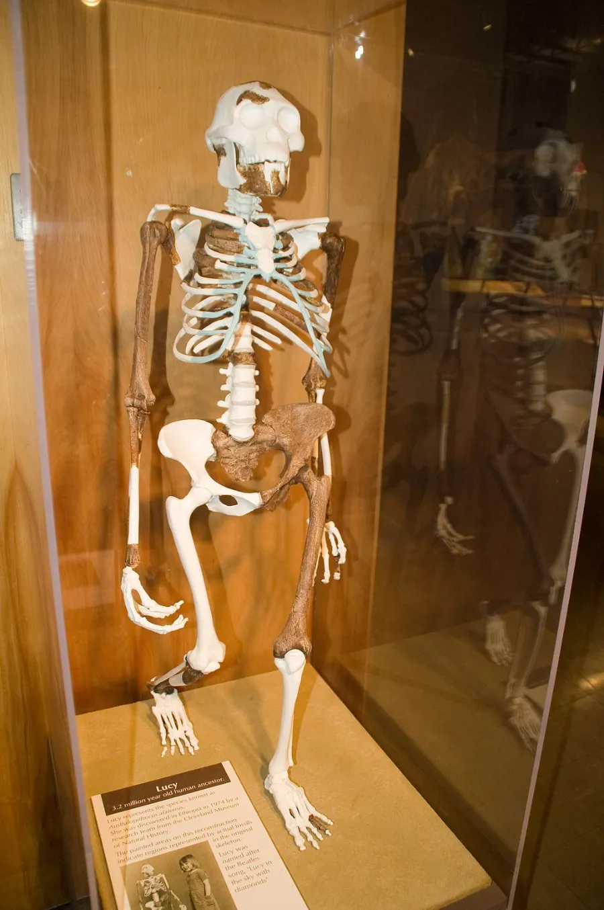

Thế Nhân sinh và sự tuyệt chủng
Con người đã làm thay đổi hệ sinh thái và khí hậu Trái Đất, nhưng không giải thích được mọi thay đổi gần đây. (Quaternary), kỷ cuối cùng và hiện tại của Đại Tân sinh, bắt đầu 2,58 triệu năm trước cùng kỷ băng hà hiện nay. Các tấm băng tiến và lùi, nhiều khả năng do (Học phần 15). Các (megafauna) thích nghi với lạnh như lười đất khổng lồ, hổ răng kiếm và voi ma mút lông xoăn xuất hiện, rồi phần lớn tuyệt chủng khi Trái Đất ấm lên sau cực đại băng hà gần nhất (Hình 8.77). Do khí hậu hay do con người? Con người chắc chắn đã gây ra những vụ tuyệt chủng gần đây như chim dodo và bồ câu viễn khách. Ý tưởng lâu đời nhất và có lẽ được chấp nhận rộng rãi nhất là (overkill hypothesis): con người săn động vật ăn cỏ lớn làm thức ăn, động vật ăn thịt mất con mồi, và ở nhiều nơi sự xuất hiện của con người gắn với tốc độ tuyệt chủng tăng.
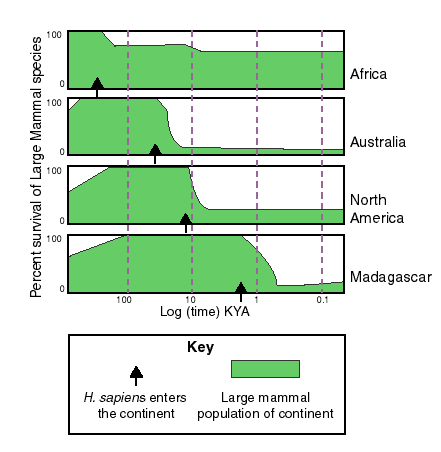
Tác động của con người hiện đại lên Trái Đất là không thể bàn cãi, và nhiều nhà khoa học cho rằng nền văn minh nhân loại đã kết thúc hoặc thay thế và xác lập một khoảng thời gian mới, (Anthropocene) (Hình 8.78). Các bằng chứng được tóm tắt trong Bảng 8.12. Tranh luận lớn nhất là thời điểm bắt đầu: với nông nghiệp, khoảng 12.000 năm trước, vốn sẽ hiện ra trong địa tầng, hay với cách mạng công nghiệp và lượng carbon dioxide nó thải vào khí quyển. Dù thế nào, các nhà địa chất tương lai, kể cả người ngoài hành tinh, sẽ dễ dàng nhận ra tác động của con người như sự khởi đầu của một khoảng thời gian địa chất mới.
| Bằng chứng | Nội dung |
|---|---|
| Tuyệt chủng | Các loài bị mất do hoạt động của con người |
| Triti | Lượng triti (hydro có hai neutron) tăng do thử hạt nhân |
| Chất ô nhiễm | Chất ô nhiễm tăng như carbon dioxide |
| Khoáng vật mới | Hơn 200 loài khoáng vật chưa từng có, chỉ xuất hiện trong thế này |
| "Hóa thạch" tương lai | Vật liệu bền lâu như nhựa và kim loại |
| Đất đá bị dời | Khối lượng lớn đất đá do con người di chuyển |
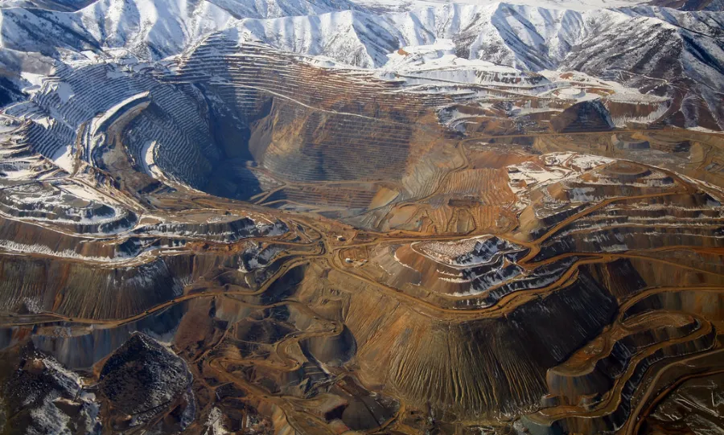
Kiểm tra: Câu hỏi Mục 8.8 trong giáo trình ↗
Tóm tắt
Trái Đất đã thay đổi to lớn kể từ khi hình thành: khí quyển chứa đầy oxy, các dạng sống xuất hiện rồi biến mất, các siêu lục địa ghép lại rồi tan rã, và số dạng sống đã tuyệt chủng còn nhiều hơn số đang tồn tại. Hiểu khái quát những thay đổi này giúp nhìn nhận các biến đổi hiện nay một cách toàn diện hơn.
Tóm tắt nhanh
- Vụ Nổ Lớn 13,8 tỷ năm trước; bằng chứng: Phổ học, dịch chuyển đỏ (Hubble), bức xạ phông vi sóng vũ trụ. Sao tổng hợp H → He → … → Fe, Ni; siêu tân tinh tạo nguyên tố tới urani.
- Giả thuyết tinh vân: hành tinh đá bên trong đường tuyết, hành tinh khí và băng khổng lồ bên ngoài; Mộc Tinh tạo ra vành đai tiểu hành tinh.
- Hỏa thành (4,5–4,0 Ga): Trái Đất nóng chảy, phân dị thành vỏ, manti, nhân; Mặt Trăng từ va chạm lớn; nước từ thoát khí núi lửa, sao chổi, vẫn thạch.
- Thái cổ (4,0–2,5 Ga): đợt bắn phá lớn muộn (4,1–3,8 Ga); nền cổ (khiên + nền); stromatolit 3,5 Ga.
- Nguyên sinh (2,5 Ga–541 Ma): GOE, thành hệ sắt dải, băng hà Huron; Rodinia; sinh vật nhân thực, sinh sản hữu tính, khu hệ Ediacara.
- Cổ sinh (541–252 Ma): Bùng nổ kỷ Cambri, hàm, thực vật trên cạn, động vật bốn chân, trứng có màng ối, động vật một cung bên; Pangea; kết thúc bằng tuyệt chủng kỷ Permi (trap Siberia).
- Trung sinh (252–66 Ma): Pangea tan rã, Đại Tây Dương mở; kiến tạo sơn Nevada và Sevier, biển nội địa; khủng long, dực long, chim, thú, thực vật có hoa; kết thúc bằng va chạm K-Pg.
- Tân sinh (66 Ma–nay): Tethys khép lại (Himalaya), Laramide, San Andreas và Bồn địa và Dãy núi; thú đa dạng hóa, họ Người; kỷ băng hà Đệ Tứ; thế Nhân sinh được đề xuất.
Tài liệu tham khảo
Ghi chú kiểm chứng
Mọi nội dung trong tài liệu này đã được đối chiếu với chương sách. Chỗ nào chương sách khác với tài liệu tham khảo hiện hành hoặc tự mâu thuẫn, tài liệu ghi rõ ở đây để bạn biết giáo trình nói gì.
| Chủ đề | Chương sách viết | Ghi chú |
|---|---|---|
| Hydro 74% | Hydro chiếm "khoảng 74% toàn bộ vật chất trong vũ trụ" | Khoảng 74% khối lượng vật chất thường (nguyên tử). Phần lớn vật chất trong vũ trụ là vật chất tối, không cấu tạo từ nguyên tố (kết quả WMAP/Planck của NASA). Tài liệu giữ số liệu của giáo trình. |
| Nguyên tố từ Vụ Nổ Lớn | Vụ Nổ Lớn tạo ra hydro, heli, lithi và berili | Tổng hợp hạt nhân Vụ Nổ Lớn tạo ra hydro, heli và vết lithi; berili-7 nếu có đã phân rã thành lithi. Tài liệu giữ danh sách của giáo trình. |
| Khoảng trống trong ánh sáng Mặt Trời | Các khoảng trống ứng với nguyên tố "có trong khí quyển Trái Đất" | Phần lớn vạch Fraunhofer đến từ nguyên tố trong lớp khí quyển ngoài của chính Mặt Trời; chỉ một số ít đến từ không khí Trái Đất. Tài liệu viết "nguyên tố trong các lớp khí mà ánh sáng đi qua". |
| Hành tinh băng khổng lồ | Sao Thiên Vương và Sao Hải Vương "chủ yếu là băng methane" | Phần bên trong chủ yếu là băng nước, amoniac và methane (trang hệ Mặt Trời của NASA). Tài liệu giữ cách diễn đạt của giáo trình. |
| Định nghĩa hành tinh | Ba tiêu chí: tròn, không đủ khối lượng để tổng hợp hạt nhân, đã dọn sạch quỹ đạo | Định nghĩa IAU 2006 là: quay quanh Mặt Trời, tròn do lực hấp dẫn của chính nó, đã dọn sạch quỹ đạo (Nghị quyết B5 của IAU). "Không tổng hợp hạt nhân" không phải là một tiêu chí. Tài liệu ghi bảng là "ba tiêu chí của giáo trình". |
| Đợt bắn phá lớn muộn | Một đỉnh va chạm thứ hai 4,1–3,8 tỷ năm trước được trình bày như điều đã xác lập | Phân tích lại mẫu đá Mặt Trăng đã đặt nghi vấn liệu có thực sự có một đỉnh như vậy (Boehnke & Harrison, 2016, PNAS 113). Tài liệu giữ cách trình bày của giáo trình. |
| Băng hà Huron | Khoảng 2,1 tỷ năm trước | Thường được xác định khoảng 2,4–2,1 tỷ năm trước. Tài liệu giữ mốc 2,1. |
| Nền cổ Kalahari | "nền cổ Kalahari ở Đông Phi" | Nền cổ Kalahari nằm ở miền nam châu Phi. Tài liệu viết "ở châu Phi". |
| Tiktaalik | Xuất hiện khoảng 385 triệu năm trước | Hóa thạch có tuổi khoảng 375 triệu năm (Daeschler, Shubin & Jenkins, 2006, Nature 440). Tài liệu giữ mốc 385 của giáo trình. |
| Arthropleura | "dài 2,5 mét (6,4 feet)" | 2,5 m xấp xỉ 8,2 feet. Tài liệu chỉ ghi giá trị theo hệ mét. |
| Đoạn văn lặp | "Sự sống hồi phục trong kỷ Silur" xuất hiện hai lần | Tài liệu gộp thành một đoạn về kỷ Silur. |
| Đồng cỏ | Thực vật hạt kín biến "nhiều đồng bằng thành đồng cỏ vào cuối Đại Trung sinh" | Cỏ đã có từ cuối kỷ Phấn Trắng, nhưng đồng cỏ chỉ lan rộng trong Đại Tân sinh (Strömberg, 2011, Annual Review of Earth and Planetary Sciences 39). Tài liệu viết "giáo trình cho rằng". |
| Thạch anh sốc | "một loại thạch anh 'sốc' đặc biệt gọi là stishovit" | Thạch anh sốc là thạch anh có các cấu trúc biến dạng phẳng; stishovit là một khoáng vật SiO₂ áp suất cao riêng biệt, cũng gặp ở nơi va chạm (Bài 6). Tài liệu viết "thạch anh sốc". |
| Lõi khoan Chicxulub | Va chạm đẩy lên "trầm tích móng" (granit) | Granit là đá móng kết tinh, không phải trầm tích. Tài liệu viết "đá móng". |
| Khởi đầu thời kỳ băng hà | 2,558 triệu năm trước (mở đầu 8.8) và 2,58 triệu năm trước (thế Nhân sinh) | Bảng ICS ghi 2,58 triệu năm cho kỷ Đệ Tứ. Tài liệu dùng 2,58 ở cả hai chỗ. |
| Họ Người | "Hominid, tên gọi các loài linh trưởng giống người" | Ngày nay họ Hominidae (hominid) gồm mọi loài vượn lớn, như chính cây phát sinh trong giáo trình cho thấy; nhánh loài người được gọi là hominin. Tài liệu giữ cách dùng của giáo trình và ghi chú trong thuật ngữ. |
| Chính tả | "Agustasaurus", "Archeopteryx", "Pachycephhlosaurus", "Hominadae" | Chính tả đúng là Augustasaurus, Archaeopteryx, Pachycephalosaurus, Hominidae. |
| Số hình | Hình trong giáo trình không được đánh số | Tài liệu này tự đánh số hình và bảng theo thứ tự, nên không khớp với ấn bản nào khác. |
Nguồn & trích dẫn
Nội dung tóm tắt từ An Introduction to Geology, Chương 8, © 2017 Chris Johnson, Matthew D. Affolter, Paul Inkenbrandt và Cam Mosher, theo giấy phép CC BY-NC-SA 4.0. Mọi ảnh và hình vẽ lấy từ chương sách đều ghi nguồn trong chú thích, kèm giấy phép theo phần ghi công hình ảnh của chương.
- Vẽ cho tài liệu này theo mô tả của chương sách: thanh thời gian (Hình 8.1), dịch chuyển đỏ (Hình 8.7), đĩa tiền hành tinh và đường tuyết (Hình 8.16), phân dị (Hình 8.21), mặt cắt nền cổ (Hình 8.31), chuỗi oxy hóa (Hình 8.37) và đứt gãy chuyển dạng San Andreas (Hình 8.72).
- Các nguồn ngoài được ghi ở nơi sử dụng, trong chú thích và trong ghi chú kiểm chứng.